CAD for functional printed parts
Stop guessing 3.2mm
Every printer shrinks a hole by a different amount. So you type 3.2, print it, find it tight, try 3.3, and now that number is wrong for everyone else and wrong for you the day you swap filament. Slipfit lets you write what the hole is for, an M3 bolt, passing through, and works out the millimeters from gauges you printed on your own machine.
What you wrote
What gets printed
That dropdown is a real control in the app. Switching it rebuilds the model against a printer's measurements, it does not re-scale what is on screen.
Start here
What Slipfit is, and who it is for
You've got a printer and a drawer full of bolts, nuts and inserts. You've never written a line of code in your life. By the end of this page you'll go from ZERO to a part that FITS, first time out of the nozzle.
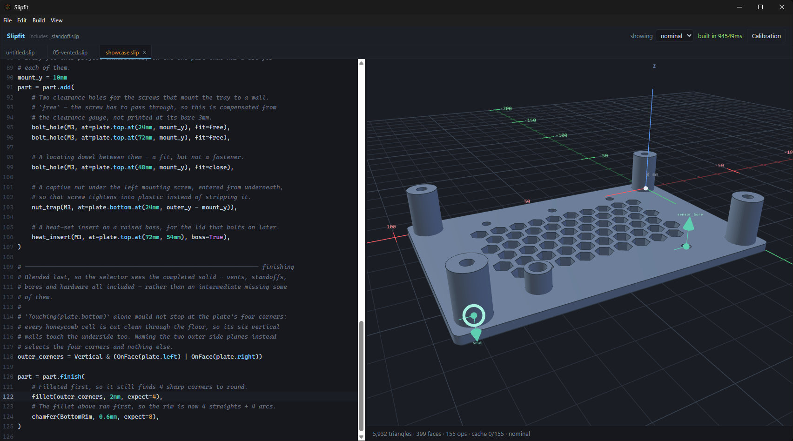
Most CAD programs have you drag shapes around with a mouse. Slipfit has you write your part as a text file instead. That sounds harder, and for a wavy decorative vase, it would be. But try this: you've got a bracket with six bolt holes on it, and you need the plate an inch longer. In drag-and-drop CAD, that's six holes you re-drag by hand. In a text file, the holes are written in terms of the plate's width, so you change one number, and all six slide over together. Once a part has more than a couple of features that depend on each other, typing the relationship once beats dragging it into place every time something changes.
Here's the bigger reason Slipfit exists, though: a printed hole never comes out the size you asked for. The nozzle lays plastic slightly inside the line you drew, and exactly how much depends on your machine, your nozzle, and whatever filament is loaded. Every printer-owner learns this the hard way, you model a 3mm hole, it prints tight, you bump it to 3.2, and now that number is wrong again the day you switch spools. Slipfit splits the problem in two so you only solve it once. Your file records intent "this is an M3 bolt, and it needs to slide through." Your profile records what your printer actually does to a hole, measured once by printing a little test gauge and seeing which size the bolt first slides through freely. Slipfit does the math and picks the millimeters for you when you export.
A model is a text file
Plain text, saved as .slip. You can read it, email it to a friend, or see exactly what
changed between two versions.
Small vocabulary
Five shapes, three ways to combine them, and a handful of words for hardware. That's most of what you'll ever need to type.
One part per file
Your file just needs to end up with something called part. That's the only name
Slipfit actually goes looking for.
Calibrate once
A few gauges, about 40 minutes of printing, and you're done. Every part you make afterward uses those numbers automatically.
Do I need to know how to program?
No, not to get started, and maybe not ever. Under the hood, Slipfit files are written in Python, but the first half of this page only uses words Slipfit hands you directly, and every example is short enough to read out loud to someone. A five-line file is a real Slipfit file and a real part you can print tonight.
You can pick up a bit of Python later, once you want forty vents instead of one, or a bolt pattern that re-centers itself when you resize the plate. When you're ready for that, the whole language is sitting there waiting, loops, functions, arithmetic, instead of some cut-down scripting dialect that runs out of road right when you're getting somewhere. Anywhere this page leans on one of those, it stops and explains it in plain English first.
What it doesn't do
Worth knowing up front, so you're not hunting for it later. This version has no lofts, splines, draft angles or offsets, and no constraint solver you drag lines around in, a profile's dimensions live in the code, not in a drag. Most of a part is just solid blocks added together and cut away, the way you'd describe it to a friend over the phone, plus a 2D outline you draw once and then sweep, mirror or pattern into the rounded, repeated, and revolved shapes a plain block can't make on its own. One file makes one part, though that part can pull in pieces from several files.
If you're after an organic, sculpted shape, there are better tools for that job. If you want a bracket, a mount, an enclosure lid or a jig, something that has to actually fit and hold, this tool is built for exactly that.
Start here
Install it
One file, double-click, done. Python and the CAD kernel are already baked into the installer, there's nothing else to set up and nothing else to install.
Windows · setup.exe
Slipfit-0.5.0-windows-x64-setup.exe, installs for you alone, no administrator prompt.
macOS
Not packaged yet, macOS support is coming in a future release.
The installer also sets up its own little sandbox, a security wrapper that keeps the app from poking around parts of your machine it has no business touching. You won't see it doing anything; you'd only ever notice if it weren't there.
Windows
Double-click Slipfit-0.5.0-windows-x64-setup.exe. It installs into your own user
folder and never asks for administrator rights.
The installer isn't code-signed, a signing certificate costs real money, and this is a one-person project, so Windows shows "Windows protected your PC." To get past it, click More info, then Run anyway.
That's exactly the warning you should take seriously on a file from a stranger. Only click through it for software you actually meant to install, from a source you actually trust.
Antivirus (Norton)I've tested the installer on a PC running Norton, and a popup came up saying it was checking the app and sending it off to their threat team. Sounded alarming, but it cleared their analysis and has run fine on that machine ever since.
Linux
sudo apt install ./Slipfit-0.5.0-linux-x64.deb
Then launch Slipfit from your applications menu. It's worth installing with
apt rather than dpkg -i, apt pulls in anything the
package is missing, instead of leaving it half set up.
The first time you open it
Two folders show up, and it's worth knowing which is which, they do different jobs:
| Folder | Windows | Linux | Holds |
|---|---|---|---|
| Your models | Documents\Slipfit | ~/Documents/Slipfit | Your .slip files and the parts you export. Comes seeded with a folder of examples
you can open up and pull apart. |
| Your workshop | %APPDATA%\Slipfit | ~/.config/Slipfit | Your calibration — what your printer actually does to a hole, and which heat-set inserts you own. |
They're kept apart on purpose. A calibration describes your printer, not any one project, so it needs to follow you into every folder you model in. If it lived with the models instead, a part you opened from your Downloads folder would quietly export with no compensation at all.
Start here
The window
Your file on the left, your part on the right, and a dropdown up top that decides which printer you're building for.
.slip. It rebuilds about a third of a second after you stop typing,
and instantly the moment you hit save.
viewportthe part it built. Z is up and the grid is the bed, so "which way is up" is never a
guessing game.
inspectorpops open when you click a face. It tells you why that face is there.
footerhow big the build is, which printer the numbers came from, and a standing
♥ Support link.
Moving the camera
| Do this | Get that |
|---|---|
| Drag with the left button | Orbit |
| Shift + drag, or drag with the right button | Pan |
| Scroll wheel | Zoom |
| Click a ball on the corner gizmo | Look straight down that axis, flat. Below. |
| Click the gizmo's hub | Back to the ordinary view |
| Click a face | Open the inspector on it |
| ↑ ↓ in the inspector | Step through the chain |
| F | Frame the part |
| X | X-ray: draw the edges hidden inside the solid |
| A | Cycle how many anchors are drawn |
| S | Section: cut away to see inside. More, below. |
| M | Measure: pin dimensions onto the part, one after another. More, below. |
| Esc | Close the inspector or the calibration sheet |
The gizmo in the corner, for looking straight at something
Bottom-left of the viewport, there's a little cluster of six colored balls on three spokes with
a hub in the middle. Click a ball and the camera snaps to that axis and looks straight
down it, down z for a top-down view of the bed, along x or y for a side view. The
balls are lettered, and each is filled in on the positive side of its axis and hollow on the
negative, so you can tell +x from −x without memorizing which color
means what.
An axis view is drawn flat, no perspective, and it's worth knowing why: a flat view is the only one where you can actually see whether things line up. Under normal perspective, parallel edges converge as they head away from you, so a hole that's dead square to an edge and one that's 2° off both look about the same. Flat, they don't: parallel stays parallel, and "lined up" becomes something your eyes can confirm rather than something you're hoping for. That's what makes "are these two faces actually in the same plane" a question you can just look at and answer. Click the hub to head back to the normal perspective view.
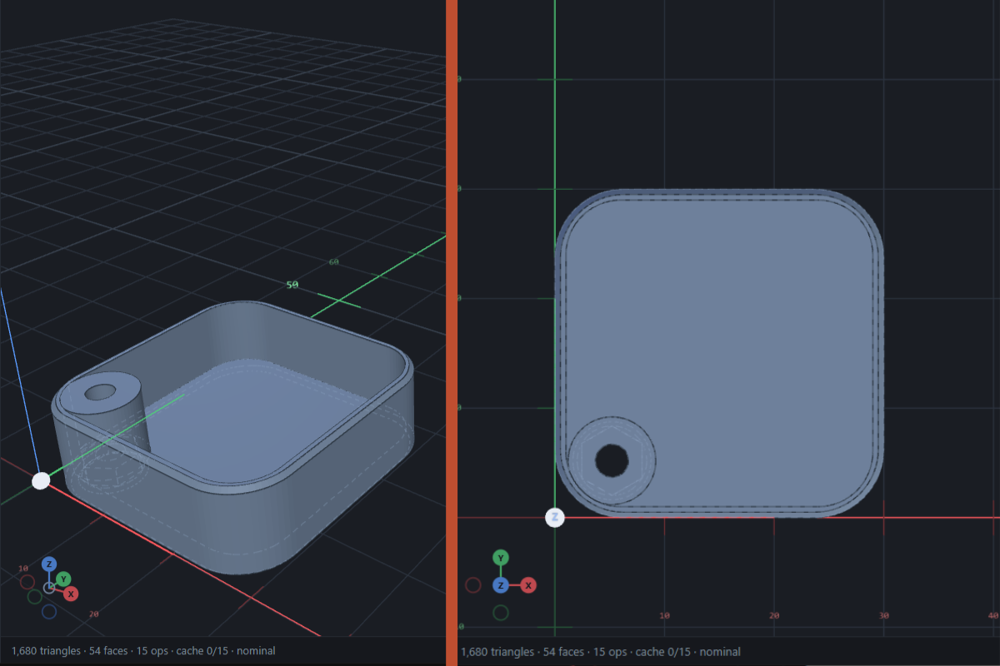
Half of all CAD programs move the camera with your mouse, and half move the model instead, so one of them is going to feel backwards to just about everyone. File ▸ Settings… (Ctrl/Cmd + ,) has five separate switches: orbit horizontal, orbit vertical, pan horizontal, pan vertical, and the zoom wheel. Five, because most people's complaint is about one specific axis, and flipping all of them at once just trades one annoyance for another.
That same settings sheet also has the theme picker, a handful of built-in themes, including a
light one, with a Duplicate button so you can make your own and tweak it. docs/shell.md has the full rundown.
These settings live in the application itself, they don't travel with your
.slip files.
Three things the viewport shows that are not your part
| What you see | What it means |
|---|---|
A violet shape, with a 1 tool shown badge |
A shape you built but have not yet cut or fused with anything. Usually a cutter, written a line before the cut that consumes it. It disappears the moment it is used. |
A ghosted shape, with an amber 1 unused result badge |
A line that did something and then threw the answer away — the mistake everybody makes once. Explained below. |
| Small teal arrows on faces | Anchors: named places on the part. The arrow points the way the face looks, which is how
.placed() knows which way round to mate two parts.
|
A cycles the anchors through three views: named (just the ones somebody actually gave a name to, the default), all (including the six every box comes with for free), and none. Clicking a face always shows that body's anchors no matter which mode you're in, which comes in handy when you're trying to work out why a shape landed somewhere you didn't expect.
The editor helps as you type
Start typing, and a list pops up with what fits: Slipfit's own vocabulary, Python's keywords, and
the unit suffixes. That suffix list only shows up where a suffix can actually go, right after a
number, nothing in between, so range(10 doesn't sprout a random popup, and after
1/4 you get offered in for inches rather than the Python
keyword of the same name. It's entirely local, too: nothing gets fetched, nothing's indexed,
nothing leaves your machine. Once the list shows up, use the arrow keys to pick one and hit enter
to accept it.
Menu commands worth knowing
| Command | Shortcut | What it does |
|---|---|---|
| File ▸ Open | Ctrl/Cmd + O | Opens a .slip in a new tab. Does not run it — see below. |
| File ▸ Save | Ctrl/Cmd + S | Saves and rebuilds. |
| File ▸ Export | Ctrl/Cmd + E | Writes the part to a file you can slice. Three formats. |
| File ▸ Settings… | Ctrl/Cmd + , | Which way the mouse turns the camera, and the editor/viewport theme. |
| Build ▸ Rebuild | Ctrl/Cmd + B | Builds again without editing anything. |
| Build ▸ Cancel build | Ctrl/Cmd + . | Stops a build that is taking too long. A file with an endless loop in it cannot be stopped any other way. |
| Build ▸ Restore last good build | Ctrl/Cmd + Shift + R | Puts back the last text that built cleanly. Survives closing the app. |
| Build ▸ Calibration… | Ctrl/Cmd + K | Opens the calibration sheet. |
| View ▸ X-ray | X | Shows edges hidden inside the solid — the quickest way to tell whether a hole actually got cut.
Like F (frame the part) and A (cycle the anchors), it is a bare letter, so
it acts on the 3D view only when you are not typing in the editor. |
| Help ▸ Documentation… | — | Opens this guide in your browser. |
| Help ▸ Support Slipfit… | — | Slipfit is free and complete; this is the one place that asks. No prompt, no reminder — a menu item and nothing else. |
Working on several files at once
Files open in tabs above the editor, and the active tab, the underlined one, is whatever the 3D view is currently showing. Each tab keeps its own text, its own undo history, and its own last successful build, so flipping back to something you were looking at five minutes ago is instant, not a rebuild. This is exactly what makes a part built from several files workable in practice: click into the library file, fix the standoff, click back, and the model that uses it has already rebuilt itself for you.
Four states, and how to tell them apart
| State | How it looks |
|---|---|
| Built | The part, in solid surface color. |
| Failed, nothing built | An error panel under the editor, the failing text underlined, and an empty viewport. |
| Failed, partly built | An amber, hatched part with a badge naming which half-finished stage you are
looking at — partial — cut(bore) as of bracket.slip:10 — plus the inputs that failed
lit in red. |
| The build process crashed | An error panel naming the operation, and an offer to restore the last good build. |
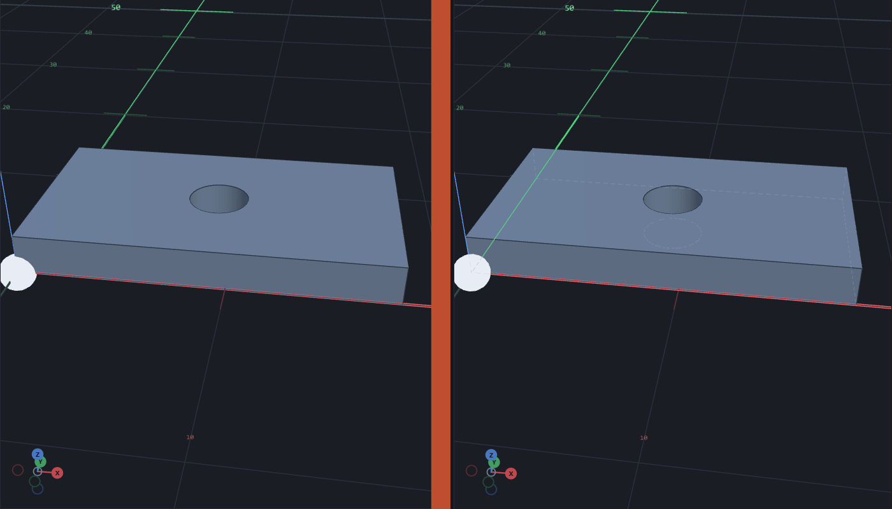
Amber and hatched means the build stopped partway through, and you're looking at a half-finished stage, not your actual model. It gets three separate warning signs at once, the color, a wireframe shell laid over it, and a text badge, specifically so you can't mistake it for a finished part and send it to the printer.
Start here
Opening a file isn't the same as running it
Read this bit even if you skip the rest. A .slip file is a little program, and
running one you didn't write carries the same risk as running any other program a stranger handed you.
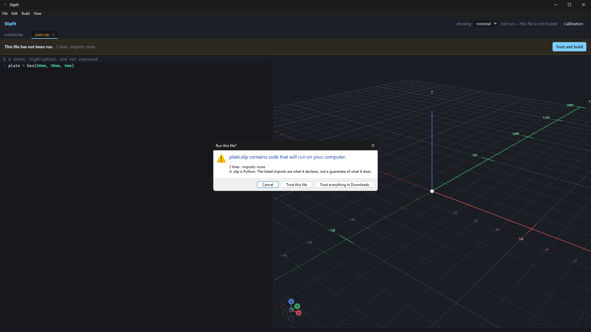
Open a file Slipfit hasn't seen before, and it gets read, displayed, and color-coded, and nothing more. The banner across the top is the only path from "I can read this" to "this may now run." Nothing executes while you're sitting there looking at it.
The banner counts the lines and lists what the file pulls in, and it works that out by reading
the text, not by running it. Treat that list as a disclosure, not a clean bill of health: a file
that imports nothing but math can still reach into your files if it wants to.
| You trust | Recorded as | It lapses when |
|---|---|---|
| A single file | Its path, and a fingerprint of the exact contents you approved | The contents change — including a re-download over a file you approved last week |
| A whole folder | The folder | Never. Your own project is somewhere you edit constantly. |
A .slip downloaded off a maker forum could read your files and ship them
somewhere, and nothing about the geometry it builds would look any different. There's no
sandbox wrapped around a model, and a custom file extension doesn't imply one exists. Read a
shared file before you trust it, it's plain text, and that's half the point of plain text.
Pulling in one file from another runs that file too, so the trust prompt lists every file about to execute, not just the one you clicked open.
A .slip runs; a STEP file you use, or a font, is only
parsed. The banner lists both, under headings that say which is which, but only the
code gets a warning, step files and fonts don't run code.
Start here
Your first part
A plate with a hole through it. Three lines, and every single word in them explained.
-
Make a file
Open Slipfit and you'll get a blank editor with a tab called
untitled.slip. Just click into the window and start typing. -
Type this
part = box(40mm, 20mm, 3mm).cut( hole(5mm, 3mm, at=(20mm, 10mm, 3mm)) ) -
Save it
Slipfit tries to build the model every time you pause while typing, but hit Ctrl/Cmd + S or use the file menu to save properly. Get it right and the part shows up in the viewport. If something's off, the error message tells you exactly where to look.
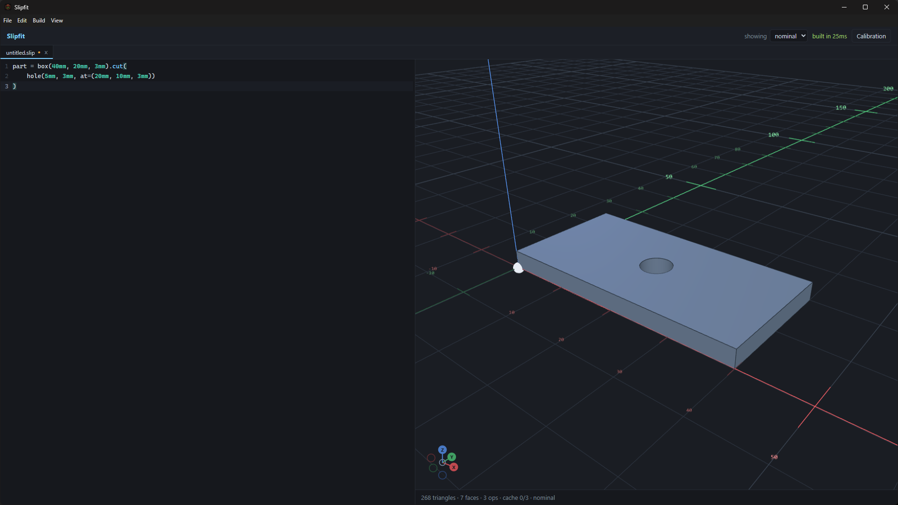
part.Reading that out loud
Read it as one sentence: "take a block 40mm by 20mm by 3mm, cut a 5mm hole 3mm deep into it at
(20mm, 10mm, 3mm), and call the result part." Here's every piece of it, broken
down:
- part =
- The one name Slipfit looks for once your file's done running. Whatever
partends up being is what you see on screen and what you export. Every other name you use is entirely your own business. - box(40mm, 20mm, 3mm)
- A rectangular block: 40mm long, 20mm wide, 3mm thick. The parentheses hold the three sizes, separated by commas, the same way you'd say "forty by twenty by three" out loud. Read the order as X, Y, Z.
- .cut(…)
- That dot means "and now do this to it."
.cutremoves a second shape from the first, the same way a drill bit removes material from a plate. - hole(5mm, 3mm, …)
- The shape getting removed: a 5mm-wide hole, 3mm deep, drilling straight down into the material.
- at=(20mm, 10mm, 3mm)
- Where to put it.
atis the name of the setting, and everything after the=is its value, 20mm along, 10mm across, starting from the top surface. On a 40mm by 20mm plate, that's dead center.
The indented middle line and the closing bracket sitting alone on its own line are just breathing room, you could squeeze the whole thing onto one line and it would mean exactly the same thing. Slipfit does care about indentation later on, once you get to loops and functions, and this page flags it when you get there.
Hardware's sold by diameter, holes get drilled by diameter, and calipers read diameter, so
Slipfit never makes you hand it a radius. hole(5mm, …) means five millimeters
across, full stop.
Now make it adjustable
Give your numbers names, and the part turns into something you can tweak from one spot instead of hunting through the whole file. This right here is the entire reason to model in text in the first place:
length = 40mm
width = 20mm
thickness = 3mm
bore = 5mm
plate = box(length, width, thickness)
part = plate.cut(hole(bore, thickness, at=plate.top.at(length / 2, width / 2)))
The first four lines each just say "from now on, this word means this number." After
that, you can write length anywhere you would've written 40mm, and you
can do arithmetic with it too, length / 2 is twenty.
That last line is where it pays off. plate.top.at(length / 2, width / 2) means
"on the plate's top face, halfway along and halfway across." Change length
to 60mm, and the hole stays dead centered, because its position gets worked
out instead of typed in as a fixed number. In a mouse-driven program, you'd have had to
drag the hole back to center by hand every time. That thing after the dot is called an anchor, and it gets covered properly below.
Every save, or even just a pause while typing, rebuilds and redraws the model almost instantly, so a shape in the wrong spot is something you see, not something you have to calculate ahead of time. Put a number roughly where you think it belongs, look at what happens, adjust. That loop, guess, look, adjust, is basically the whole workflow.
Writing a .slip
Numbers carry units
This is the one thing Slipfit bolts onto ordinary Python, and the one thing that'll catch you off guard first.
6.35mm is a value in its own right, not just a number with a label stapled on. You
can add it, multiply it, compare it, store it in a list. What you can't do is mix it
with a bare number, because that's exactly the mistake units exist to catch before it reaches
your printer:
wall = 2mm
outer = wall * 2 # fine — a length times a plain number is a length
ratio = 10mm / 2mm # fine — gives 5.0, a plain number
gap = 3mm + 1 # error: cannot add Length and ScalarThat last line gets refused, not silently guessed at. One millimeter and one inch and one thou are all just "1" as a bare number, and a program that quietly picks a unit for you will eventually pick the wrong one, right when you're not looking.
There's no exception carved out for zero, either. 3mm > 0 is an error, while
3mm > 0mm is fine. Letting bare 0 count as an honorary length is
exactly the crack everything else would leak through.
What multiplying two lengths gives you
Slipfit keeps track of five kinds of quantity: a plain number, a length, an area, a volume, and an angle. Multiplying and dividing moves between them exactly the way it does on paper:
10mm * 4mm # an area, 40mm2
10mm * 4mm * 2mm # a volume
20mm / 4mm # 5.0 — the units cancel, so it is a plain number
sqrt(40mm2) # back to a length
sin(45deg) # 0.707… — angles are a kind too, so rotate(90) cannot be wrong
Combinations that don't mean anything physically get refused instead of made up on the spot.
There's no such thing as a length times an angle, and no "one over a length", which is exactly
why 1 / 4in fails. More on that next.
Fractions, for imperial hardware
wall = 1/4in # 6.35mm
rod = 3/8in # 9.525mm
Write these with no spaces at all. 1 / 4in gets read as a division
and fails loudly. Mixed numbers like 3-1/2in aren't supported, they'd collide with
subtraction, so write 3.5in or 7/2in instead.
Every suffix there is
Fourteen of them, and no way to bolt on more. Stick them straight onto the number, no space.
| Kind | Suffixes | Kept as | Shown as |
|---|---|---|---|
| Length | mm cm m in |
mm | mm, to 0.01 |
| Area | mm2 cm2 m2 in2 |
mm² | mm², to 0.01 |
| Volume | mm3 cm3 m3 in3 |
mm³ | mm³, to 0.01 |
| Angle | deg rad |
radians | degrees, to 0.1 |
3/8in is really 9.524999999999999mm and stays that way all the way
to the printed part. Only the number on screen is rounded to 9.52mm. Never compare
against the figure you read off the display.
The one place Slipfit differs from Python
2in is two inches. Add a space, and 2 in items is still an ordinary
Python "is it in this list" check, the suffix has to be touching its number, no gap. That's the
only spot anywhere where a valid Python program would mean something different as a
.slip, and Python itself already flags it as ambiguous.
Writing a .slip
Shapes, and where they go
Five shapes. Everything else is just those five, combined, and honestly, the real work isn't picking the shape, it's saying where each one goes.
Most of a part is just solid blocks, cylinders and cones, added onto each other and cut away from each other. If you can describe the part out loud to a friend, "a 60 by 30 plate, 6 thick, with a ⌀3 hole 10mm in from each end", you've basically already written the file. For anything that doesn't work, a rounded edge, a tapered rib, anything a plain block can't describe, you draw a profile instead: a 2D outline, written in code, that turns into a solid by getting extruded or revolved.
Which one do I want?
| What you are making | Reach for |
|---|---|
| A plate, a wall, a base, a square boss — or a slot to cut with | box |
| A pillar, a standoff, a shaft, a round boss | cylinder |
| A countersink, a lead-in, a spike | cone |
| A pocket for a nut, a hex socket | hex_prism |
| Anything you are drilling into a surface | hole |
Written out in full:
| Call | What you get |
|---|---|
box(x, y, z) |
A rectangular block, square to the world, its lowest corner at at. |
cylinder(diameter, height) |
Standing on at, running along axis. |
cone(diameter, top_diameter, height) |
A cone with its point cut off. A top of zero gives a real point. |
hex_prism(across_flats, height) |
A hexagonal post, sized across the flats — the way every nut is specified. |
hole(diameter, depth) |
A cylinder aimed into the material, for cutting with. |
box(40mm, 20mm, 3mm) # 6 faces, 12 edges, 2400mm3
cylinder(10mm, 20mm) # ⌀10 across, 1570.8mm3
cone(10mm, 4mm, 6mm) # tapers 10 down to 4, 245.04mm3
hex_prism(5.5mm, 3mm) # 5.5 across the flats = 6.35 across the corners
cylinder(6mm, 30mm, axis=(1, 0, 0)) # lying down, running along Xcylinder(10mm, …) is ten across, not ten in radius.
hex_prism(5.5mm, …) is 5.5 across the flats, the number
stamped in the nut standard, and the number your calipers read across a nut's two parallel
faces. Slipfit works out the across-the-corners size the pocket actually needs, 6.35mm for
that nut, on its own. Making you supply a number nobody actually has on hand is exactly how a
conversion gets redone twice and disagrees with itself.
Where a shape lands if you say nothing
Slipfit's world has three directions. x runs to the right, y runs away from you, and z runs up, and up is the direction your printer actually builds in, which is why z keeps mattering later on. All three meet at a point called the origin.
Nothing sits centered on the origin by default. A box drops its lowest corner
there and grows outward in all three directions, so box(40mm, 20mm, 6mm) fills x 0
→ 40, y 0 → 20, and z 0 → 6. A cylinder, a cone, and a hex prism stand on the origin
instead, centered right over it, and grow upward from there.
at=. The dashed lines are the three edges you cannot
see from here.Giving a shape a name
plate = box(40mm, 20mm, 6mm)
Read the = as "from now on, plate means this box." It's worth
doing for anything you'll refer back to, because naming a shape is how you get to say on the
plate's top face, 10mm in from the corner, which is how almost every position in a real
model actually gets written. The names are entirely yours to pick; only part means
anything special to Slipfit.
Three settings every shape takes
| Setting | Takes | If you leave it out | Works on |
|---|---|---|---|
at= |
Three lengths, an anchor, or a spot on a face | The origin | all five |
axis= |
A direction, as three plain numbers — e.g. (1, 0, 0) |
Straight up | all but box |
label= |
Some words, for what the inspector calls this step | A description of the call | all five |
These get written name=value, and that same pattern shows up everywhere in Slipfit.
You can give them in any order and skip any of them you don't need, so
cylinder(6mm, 30mm, axis=(1, 0, 0)) and
cylinder(6mm, 30mm, label="post", axis=(1, 0, 0)) build the exact same cylinder,
one's just got a label on it and the other doesn't.
at=, three ways to say where
| Written as | Means | Use it when |
|---|---|---|
at=(20mm, 10mm, 3mm) |
That exact point in space. | You genuinely know the coordinate. |
at=plate.top.at(10mm, 5mm) |
On the plate's top face, 10 in from a corner of it and 5 across. | Almost always — see anchors. |
at=plate.mount |
At a spot you named yourself, earlier. | Several things share one place. |
The second and third rows are a habit worth building early. Stretch the plate to 60mm long
instead of 40, and plate.top.at(10mm, 5mm) is still 10mm in from the corner, right
where you'd expect, while (20mm, 10mm, 3mm) is now floating somewhere random on a
completely different part.
axis=, which way the shape runs
axis= is the direction a shape grows along, it's not a rotation. A box has no
growing direction to speak of, it's just three edge lengths, so it doesn't take one at all:
box(40mm, 20mm, 3mm, axis=(1, 0, 0)) is an error, not a tilted box. To actually turn
a finished shape, see Turning a shape, just below.
| Written | Points |
|---|---|
(0, 0, 1) |
Straight up. The default, so you rarely write it. |
(0, 0, -1) |
Straight down — into a part you are cutting from above. |
(1, 0, 0) |
Along x, lying down. (0, 1, 0) is along y. |
(1, 1, 0) |
Diagonally, at 45° between x and y. Any direction is allowed. |
Those three numbers describe a direction, not a distance, which is why they carry no
units, and why (0, 0, 2) means exactly the same thing as (0, 0, 1).
How long the shape actually is comes from the length you gave it, not the axis.
Most of the time, a shape should get built right where it belongs, using at= and
axis=, rather than built at the origin and shoved into place afterward. Want the
same feature in four spots? Build it four times. The examples show how
a loop turns that into one line of code.
When that's not enough, a box sitting at an angle, or a part from another file that always
arrives at the origin, .rotated(), .moved(), and
.placed() are there for you, covered under Using another
file. Mirroring is its own separate operation, not one of
these three.
Turning a shape
plate = box(40mm, 20mm, 3mm)
# about= takes an anchor, a position, or a bare direction
turned = plate.rotated(45deg, about=plate.bottom) # 42.43 x 42.43 footprint
upright = plate.rotated(90deg, about=(1, 0, 0)) # tipped onto its edge
Turning is rigid, nothing stretches, the volume stays exactly the same, and every anchor turns
along with the shape, so turned.top still means the top. Worth noting:
hex_prism also has its own rotation=, which spins the hexagon about
its own axis as it's being built. That's a different move entirely from turning a shape that
already exists.
Why hole() exists when cylinder() would do
A cylinder built at a point grows upward from it. A hole drills downward into
the surface instead, the same direction an actual drill bit goes. Given a spot on a face,
hole() aims itself into the material for you, so it actually cuts something:
plate = box(40mm, 20mm, 3mm)
plate = plate.cut(hole(3mm, 5mm, at=plate.top.at(10mm, 10mm))) # cuts through
plate = plate.cut(cylinder(3mm, 5mm, at=plate.top.at(10mm, 10mm))) # removes nothing at all
That second line isn't a mistake in the example, it's a trap worth seeing once. It builds a ⌀3
post standing on top of the plate, then subtracts that post from thin air, and hands the plate
straight back untouched. That's exactly why hole() is the one to reach for by
reflex whenever you're drilling into a surface. For anything else you're cutting with, a hex
prism, a box, a cone for a countersink, you'll need to aim it yourself with
axis=(0, 0, -1).
Depth is measured from wherever you place it, and going too deep costs you nothing. On a 3mm
plate, hole(3mm, 3mm, …) and hole(3mm, 10mm, …) give you the exact
same clean through-hole, so whenever you mean "all the way through," just saying the thickness
or more is a lot simpler than trying to be exact.
Writing a .slip
Anchors
A named spot on a shape, so you can say "on the top face, 10mm in from the corner" instead of doing coordinate math in your head.
Every box comes with six of these built in: top, bottom,
left, right, front, back. A cylinder and a
cone each get top and bottom. Tack on .at(across, along)
and you get an actual point on that face:
plate = box(40mm, 20mm, 3mm)
plate.top.at(10mm, 5mm) # the point (10, 5, 3)Both numbers measure inward across that face, starting from one of its corners:
| Anchor | .at(10mm, 5mm) lands at |
The second number runs across |
|---|---|---|
top |
(10, 5, 3) | the 20mm width |
bottom |
(10, 15, 0) | the 20mm width |
left right front back |
off the part | the 3mm thickness |
On a 3mm plate, plate.left.at(10mm, 1mm) lands right on the material, but
plate.left.at(10mm, 5mm) lands 2mm below it, floating in mid-air. This one trips
people up constantly, it's the single most common reason a hole comes out nowhere near the
part.
A cylinder anchors on its center line instead, since a round face has no corner
to measure from in the first place. cyl.top.at(0mm, 0mm) is dead center on the far
end.
An anchor is a plane, not a face
This starts to matter once you start cutting things up. A cut can split one top face into three, and a reference to "that face" would either go stale or quietly start meaning just one third of it. An anchor keeps meaning the same flat plane it always meant, no matter what's happened to the material there. If the material at an anchor's been cut away entirely, selecting faces there matches nothing at all, and tells you so, instead of silently pointing at empty space.
Naming your own
plate = plate.with_anchor("mount", plate.top.at(10mm, 5mm))
plate.mount # the point (10, 5, 3), by name, from now onGet the name wrong, and it tells you what actually exists instead:
AnchorError: box(40mm, 20mm, 3mm) has no anchor named 'topp'
= anchors on this solid: back, bottom, front, left, right, topCycling how many are drawn
Anchors show up in the viewport as small teal arrows, each one pointing the way its face looks, and a part with a handful of named anchors gets cluttered fast. Press A to cycle through what's drawn: named anchors only (the default), all of them including the six every box comes with, and none. Clicking a face always shows that body's anchors no matter which state you're in, that's a direct response to your click, not part of the cycle.
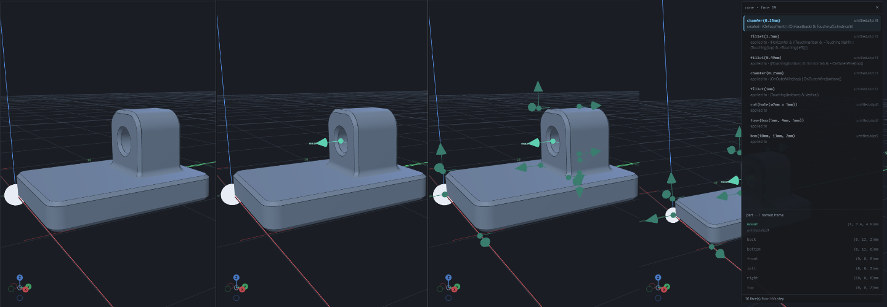
Writing a .slip
Profiles, extrude and revolve
A 2D outline you draw in the plane of an anchor, then turn into a solid by sweeping it. For the rounded edge, the tapered rib, and the lathe-turned foot that the five basic shapes just can't describe.
A profile is a closed outline you draw one run at a time, a straight line or
an arc, each one ending right where the next begins, until you close it back up to where you
started. On its own it's flat and builds nothing at all; .extruded() pushes it into
a solid along a straight line, and .revolved() spins it around a line to make one
instead, think of a lathe.
outline = (
profile(on=plate.top)
.line_to(40mm, 0mm)
.arc_to(48mm, 8mm, radius=8mm, label="nose radius")
.line_to(48mm, 30mm)
.line_to(0mm, 30mm)
.close()
)
rib = outline.extruded(6mm) # 1426.27mm2 of outline, 8557.59mm3, 7 facesReading that out loud
- profile(on=plate.top)
- Start drawing on the plate's top face, the same
(u, v)frameplate.top.at(10mm, 15mm)already uses. You never have to say the position or which way it faces twice. - .line_to(40mm, 0mm)
- A straight run from wherever the pen is right now to that point.
- .arc_to(48mm, 8mm, radius=8mm)
- A curved run to that point, bowing by the radius you gave it. It always takes the shorter way round, more on why, below.
- .close()
- Draws the last run back to the start and hands you back a finished
Profile. Nothing can be built from a profile until this runs. - .extruded(6mm)
- Pushes the flat outline 6mm along the anchor's own normal, turning it into a solid.
Every number here lives in the plate's own frame, the same one anchors
already use, so the outline moves right along with the plate the same way an anchor does, and
48mm could just as easily be plate_width - 2 * wall if that's what it
actually means.
Other CAD programs bolt a solver onto a sketch because the sketch gets dragged around with a
mouse, and the solver is what stops that drag from wrecking the design. Here, the code already
is the constraint system, a name, an expression, a dimension that refuses
3mm + 3 outright, so bolting on a second, numerical source of truth for the same
shape would just get in the way of the one that's already answering "why is this here?"
The radius is a direction, not just a size
radius=8mm puts the arc's center to the left of where you're
traveling; -8mm puts it to the right. A path curves toward its own
center, so positive means a left turn, and an outline drawn counter-clockwise (the usual way)
turns left at every convex corner, which is why the plain, unsigned case is the one you get to
write with no fuss. An arc is always the minor one, the short way round: past a
half turn, draw it as two separate arcs instead, because a radius that silently
picked between a 30° corner and a 330° loop on your behalf would be a wrong answer with nothing
on screen to warn you.
What a bad outline tells you
Each of these gets caught right at the call that caused the problem, not three lines later at
.extruded():
ProfileError: line_to(0mm, 0mm) does not move — it ends where it starts, (0.00, 0.00)
= a segment of zero length has no wall to sweep
ProfileError: arc_to() radius 2mm cannot reach (48.00, 8.00) from (40.00, 0.00)
= those points are 11.314mm apart, so the radius must be at least 5.657mm
ProfileError: a profile needs at least three straight runs, and this one closes with 2
= two straight runs enclose no area, so there is nothing to sweep
ProfileError: the profile crosses itself at (20.00, 10.00)
= line_to(40mm, 0mm) (panel.slip:4) crosses line_to(40mm, 20mm) (panel.slip:6)
That three-run floor is specifically about straight runs, not a rule about how many sides a
shape needs, a round pocket is just two half-turn arcs and nothing else. And which way round
you drew it never actually matters: an outer boundary always gets treated as counter-clockwise
and a hole as clockwise, no matter which direction your line_to and arc_to
calls actually ran, because a "hole" that silently added area to your part would be a far worse
surprise than just getting turned around for you automatically.
Watching it while you draw it
An outline you haven't swept yet isn't invisible while you're working on it, it draws right in
the viewport in violet, tracing its boundary loops, the instant .close() finishes.
It's the same treatment an unused cutting tool gets elsewhere on this page.
Click it and the inspector lists its runs in the order you drew them, each one tied back to the
line that made it. The moment something sweeps it into a solid, it vanishes, exactly the way a
cutting tool disappears the moment the boolean operation consumes it.
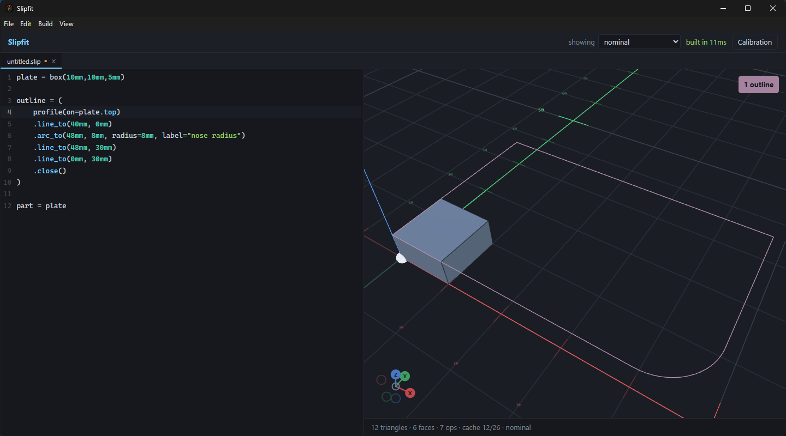
Extrude and revolve
outline.extruded(6mm) # straight up, along the anchor's normal
outline.extruded(-3mm) # the other way — a cutting tool
section.revolved(about=plate.top.u) # a full turn
section.revolved(90deg, about=plate.top.u) # a quarter of one
Extrude has no direction setting of its own, an outline drawn on
plate.top extrudes upward, and one drawn on plate.bottom extrudes
downward, because the anchor already knows which way it's facing. A negative height flips it,
which is exactly what an extruded pocket-cutting tool needs. What you get back is an ordinary
solid with two anchors of its own: top, on the cap the sweep traveled to, still in
the same coordinates the outline was drawn in; and bottom, sitting on the outline's
own original plane.
Revolving about a line
A revolve turns an outline about a line, while an anchor gives you a
plane, so instead of inventing a whole new syntax for lines, Slipfit just offers up the
two an anchor already has, by name: plate.top.u and plate.top.v run
straight through its origin, and plate.top.at(20mm, 0mm).u_axis gives you that same
direction through a specific point on it.
section = ( # 10 long, 5..15 out from the axis
profile(on=plate.top.at(0mm, 5mm))
.line_to(10mm, 5mm).line_to(10mm, 15mm).line_to(0mm, 15mm).close()
)
section.revolved(about=plate.top.u) # 6283.19mm3, 4 faces
section.revolved(90deg, about=plate.top.u) # 1570.80mm3, 6 faces
A partial turn leaves two flat faces behind where it started and stopped, and picks up
start and end anchors on them. A full turn has no such faces, and gets
neither, an anchor describing a face that isn't actually there is exactly the sort of thing
anchors exist to avoid.
Turning about a line that doesn't lie in the outline's own plane, or an outline that straddles the axis it's turning about, both would build something down in the raw geometry kernel: quietly the wrong shape in the first case, a solid passing through itself in the second. Slipfit checks for both before the turn ever happens:
KernelError: front.u is not in the plane profile(on=top) was drawn on
= it passes 3.000mm off top; a revolve turns an outline about a line lying in its own plane
KernelError: straddler lies on both sides of top.u
= far side (knob.slip:5) is on one side and line_to(10mm, -5mm) (knob.slip:4) on the
other, so the turn would sweep the solid through itselfWhich line drew this wall
Every side face of a swept solid resolves in the inspector to the exact line_to or
arc_to that drew it, not just to the extrude or revolve that swept it:
click the curved side wall
▸ extrude(6mm) panel.slip:19 created
nose radius panel.slip:16 from segment
profile(on=top) panel.slip:15 applied to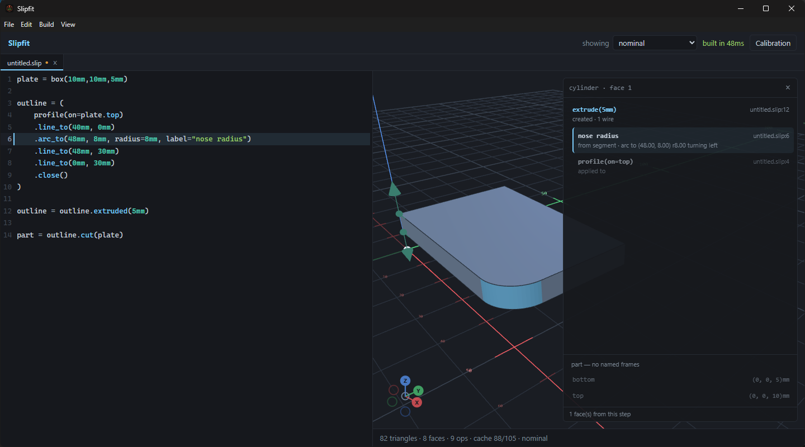
You can use that same trail as a selector too, which is the whole point of labeling a run in the first place, there's no way to ask the geometry for "the wall the nose radius made" the way you can ask for "every round face," because a part can easily end up with more than one round wall on it:
| Selector | Matches |
|---|---|
Swept |
Every wall a profile drew — the whole side set, never the caps. |
FromSegment("nose radius") |
Only the wall swept from the run with that label. |
rib.faces(Swept) # 5 walls; the 2 caps are not
rib.faces(FromSegment("nose radius"), expect=1)
rib.finish(chamfer(Circular & OnFace(FromSegment("nose radius")), 0.5mm))
A label that names nothing matches nothing, and expect=, the
same rule everywhere else on this page, is what turns that into a loud error instead of a
silent no-op that quietly does nothing.
Writing a .slip
Combining shapes
Three operations, one rule about the equals sign, and one habit worth building early, because everybody trips over its absence exactly once.
| Written | Does | At the bench this is |
|---|---|---|
solid.cut(tool) |
Removes the tool's shape from the solid. | Drilling, milling a pocket, sawing a slot. |
solid.fuse(tool) |
Adds the tool on, welded into one body. | Gluing a boss on, welding a rib. |
solid.intersect(tool) |
Keeps only the bit where the two overlap. | Trimming a shape back to an outline. |
The thing you cut with is just an ordinary solid, a cylinder, a box, a hex prism. There's no special "cutting tool" type in Slipfit: a shape becomes a tool simply because of what you did with it, and that exact same cylinder could just as easily have been fused on instead. That's why a small vocabulary of five shapes ends up going as far as it does.
None of these three operations change the solid you called them on. They hand you back a brand-new one, and if you don't catch that in a name, nothing happens at all:
part.cut(hole(3mm, 6mm, at=plate.top.at(10mm, 10mm))) # does nothing
part = part.cut(hole(3mm, 6mm, at=plate.top.at(10mm, 10mm))) # drills the holeThe hole did get made, and then got thrown straight in the bin. The
viewport does try to tell you: the discarded result shows up ghosted, with an amber
1 unused result badge, and the line gets underlined in the editor. But the build
still succeeds, which is exactly why this catches people off guard. If an edit doesn't seem to
do anything to your part, check this first. The same trap applies to .fuse(),
.finish(), and .add().
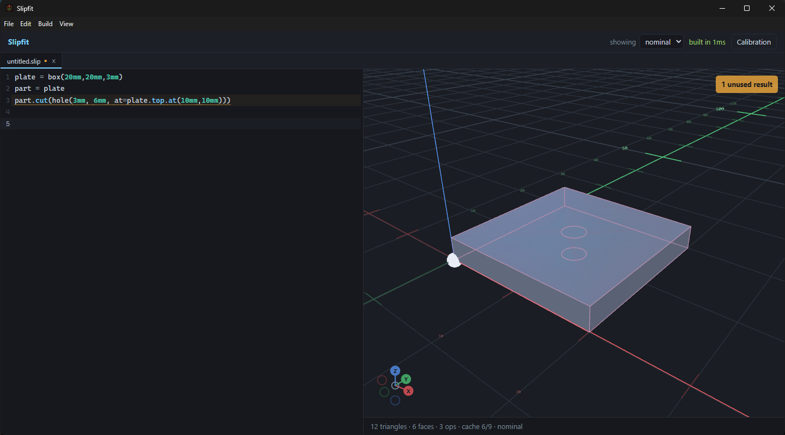
Getting a fresh solid back every single time isn't a nuisance to work around, it's exactly what
lets plate keep meaning the plain rectangle you started with, no matter how much
you go on to cut out of part afterward.
Building a part up a step at a time
Most files end up shaped the same way. Make the raw stock and give it a name, then reassign
part once per operation, so each line reads like one clear step you took, in the
order you actually took it:
plate = box(60mm, 30mm, 6mm) # the stock, kept under its own name
part = plate
part = part.cut(hole(4mm, 6mm, at=plate.top.at(10mm, 15mm)))
part = part.cut(hole(4mm, 6mm, at=plate.top.at(50mm, 15mm)))
part = part.fuse(cylinder(10mm, 8mm, at=plate.top.at(30mm, 15mm)))
Every position there is measured off plate, not off part. Both would
technically work, but plate is the one that never moves, it stays the plain
rectangle no matter what's happened to part, so it's the reliable thing to measure
from. Same reason you'd measure from the edge of the raw stock rather than from the last hole you
just drilled.
Cut with a shape that misses the material entirely, and you just get the part handed back unchanged. Two causes cover almost every case:
- It was aimed the wrong way. A
cylinder()built on a top face grows upward, away from the material.hole()drills down into it instead, and anything else needsaxis=(0, 0, -1)to point the right way. - It started off the part entirely. A pocket placed from
plate.left.at(…)lands out in mid-air if the second number's bigger than the plate is thick, because a side face is only ever as tall as the material.
The tell is a part that looks fine but has no actual hole in it. Press X for X-ray to see edges hidden inside the solid, the fastest way to find out whether the cut happened at all.
Cut forty holes with one operation
Cutting forty holes one at a time means forty separate operations, each against a part that's gotten a little more complicated than the last. Build all forty cutters into a single tool first, and it collapses down to one operation:
cutter = None
for u, v in positions:
cell = hex_prism(5mm, 3mm, at=plate.top.at(u, v), axis=(0, 0, -1))
cutter = cell if cutter is None else cutter.fuse(cell)
part = plate.cut(cutter)The result is identical either way, what changes is how long a rebuild takes, and you'll feel that the moment a part has a whole field of vents or a honeycomb pattern in it. The enclosure lid example does exactly this. A pattern, coming up shortly, is basically the built-in version of that same loop, worth reaching for once the inspector, not just the rebuild speed, starts to matter to you.
intersect, for trimming to an outline
The one people reach for least often. It keeps only whatever lies inside both shapes at once, which is a handy way to cut a rectangle down to a round outline without ever having to describe that round outline as its own boundary:
stock = box(40mm, 40mm, 3mm)
part = stock.intersect(cylinder(40mm, 3mm, at=(20mm, 20mm, 0mm))) # a ⌀40 discWriting a .slip
Mirror and patterns
Three ways to say "and another one of those", a reflection, a row, and a ring, each one
handing you back an ordinary tool that cut, fuse, or intersect can
take it from there.
Mirror
pair = arm.fuse(arm.mirrored(about=arm.left)) # 4084.38mm3, 12 faces
about= takes an anchor, an anchor's already a plane, so mirroring doesn't need any
new kind of value, or a point sitting on one, if you want a plane offset from a face rather than
passing straight through it.
It hands you back the copy rather than fusing it on for you. A
mirrored that fused itself automatically would be doing two jobs under one name, and
half the time you don't actually want the copy fused at all, a left-hand version of a part, or a
tool you mirror before cutting with it, never touches the original piece.
u and works out v fresh
A right-handed frame can't survive a reflection with all three axes intact, so a mirrored
anchor keeps u, flips the normal, and works v out from those two. The
rule that holds on both sides: both coordinates always run inward from that face's own
nearest corner, the same trade-off a box's bottom already makes against
its top (see anchors). It's the one thing about a mirrored
copy worth knowing before it catches you off guard:
arm.top.at(6mm, 6mm) # (6, 6, 6)
copy.top.at(6mm, 6mm) # (-6, -6, 6), not (-6, 6, 6)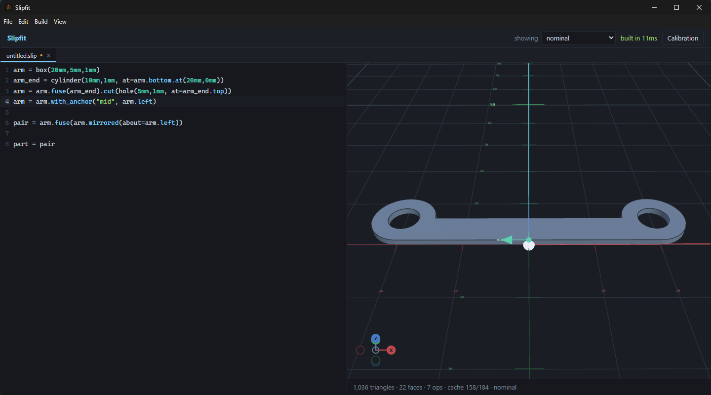
Patterns
vents = pattern(vent, count=4, spacing=15mm, along=plate.top.u)
ring = polar_pattern(slot, count=6, about=hub.top.axis)
part = plate.cut(vents)
The first copy is just the tool sitting exactly where you already built it, so
count=4 means the original plus three more. A negative spacing sends
the row the other way down the axis, and a grid is really just two patterns, one running each
direction. A polar pattern splits a full turn evenly by the count you give it, there's no way to
spread six copies over just 90° instead of a whole revolution, because "over 90°" has two equally
reasonable readings (spread across that angle, or stepped by it), and a syntax that could mean
either one is exactly the kind of confident-but-wrong behavior this tool is built to avoid. A
plain loop is how you'd write that, until an argument exists that actually settles the question.
along and about both take an Axis, the same line type
extrude and revolve already introduced you to. A frame offers three
lines through its origin: .u and .v, which a revolve turns an outline
about, and now .axis, running along the face's own normal, which is what a ring of
copies turns about. plate.top.at(30mm, 20mm).axis gives you that same normal through
a specific point on the plane, right alongside the .u_axis from before.
A pattern hands you back the copies as one single tool, with no anchors of its own,
every frame the original declared now exists count times over, and there's no one
right answer for which copy's anchor you'd even mean. That's exactly the shape
cut, fuse, and intersect already expect, so using the result needs nothing
extra from you.
A shape whose pieces overlap isn't actually a valid input to a boolean operation, and the
geometry kernel underneath won't warn you about it: a ring of copies turned about its own
tool's centerline, with every copy landing right on top of the last, fused straight into a
plate and reported a solid of zero volume, as a success. Overlapping copies
are a perfectly ordinary thing to want, though, so pattern and
polar_pattern fuse their own copies together before ever handing the tool over.
Copies that
merely touch keep their own faces, a plain fuse merges no coplanar faces, and copies that
coincide collapse into faces belonging to all of them rather than none.
What a bad pattern tells you
KernelError: pattern() count must be at least 1, got 0
= a pattern of no copies is not a pattern of nothing, it is nothing
KernelError: pattern() spacing must not be zero, got 0mm
= every copy would land on the one before it
KernelError: polar_pattern(about=…) needs an axis, not Anchor
= pass a line to turn the copies about, such as hub.top.axis or plate.top.at(30mm, 20mm).axisWhy reach for one when a loop already works
A pattern doesn't build anything a for loop couldn't already build for
you, every shape it makes, a loop makes too. What actually changes is the inspector, and that's
the whole argument for reaching for one. Four looped cuts are four separate operations on four
lines, and identical operations never get collapsed into one on purpose, so clicking the third
hole in a looped vent field just gives you a chain that names the third cut, telling you nothing
you didn't already know. A pattern gives you one clean entry instead, with the copy's index
listed right underneath it:
click the third hole
▸ cut(pattern(4 × 15mm)) plate.slip:13 modified
pattern(4 × 15mm) plate.slip:12 modified
copy 3 of 4
vent plate.slip:11 created
plate plate.slip:10 applied toThat index lives on the face the pattern produced, not on the operation itself, which is exactly what lets it survive the boolean that consumes the tool. The chain above gets read off the finished part, not off the pattern in isolation.
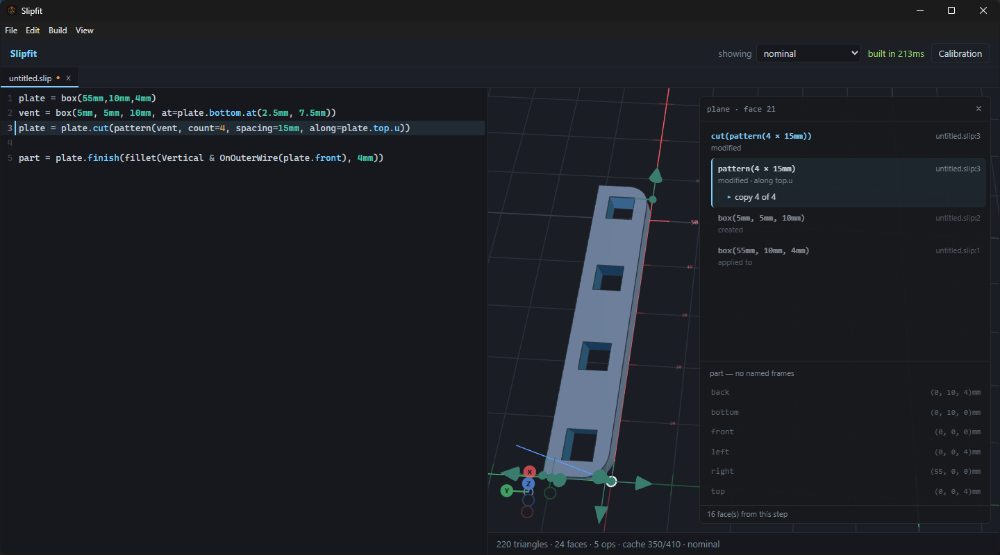
Writing a .slip
Lettering
A part number on a bracket, a size stamped on a lid, an arrow on a housing. A letter is
just a profile like any other, it's the same .extruded() and boolean you already know,
with a font doing the actual drawing for you.
label = text("SLIPFIT M3", height=5mm, on=plate.top.at(6mm, 4mm))
sunk = plate.cut(label.extruded(-0.6mm)) # 10737.28mm3, 116 faces
raised = plate.fuse(label.extruded(0.6mm)) # 10862.72mm3, 116 faces
Debossing (stamped in) is a cut, embossing (raised up) is a fuse, and that's the whole lesson,
there's no third thing to learn here. text() doesn't add anything new under the
hood: a glyph is just an outline in the anchor's own frame, exactly like a hand-drawn profile, so everything that section already told you about extrude,
revolve, and provenance applies to a letter too.
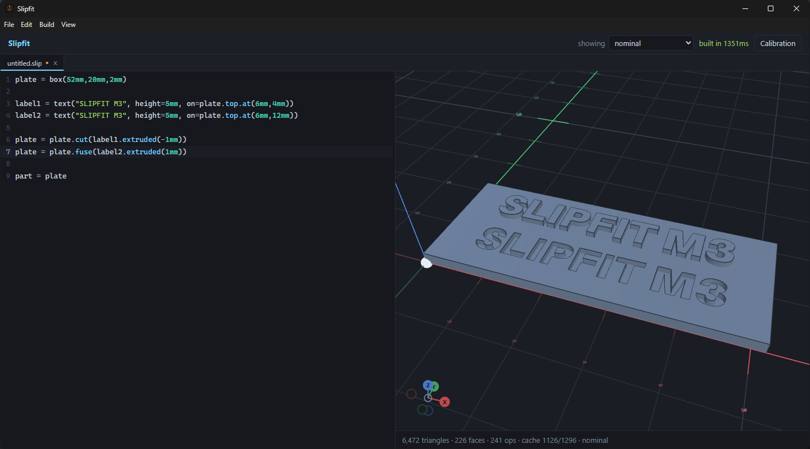
text(), two ways to use what it returns.
Reading that out loud
- height=5mm
- Cap height, the height of a capital letter, which is the number your calipers actually read off the printed part. Ascenders reach above it and descenders dip below, because that's just what letterforms do; asking for 5mm and measuring 3.5mm would be exactly the kind of dishonest number this tool refuses to produce anywhere else.
- on=plate.top.at(6mm, 4mm)
- Where the baseline starts. Two strings set on the same anchor sit on the
same line whether or not either one has a descender in it.
label.widthgives you the width the string was set at, advances included, a touch wider than the ink itself.
Aileron Black, by Sora Sagano (dotcolon.net), released under CC0 1.0, named in
the export report under data this model used. A bundled font isn't just a
convenience: a system font would make the exact same .slip produce different
geometry on different machines, for a reason that has nothing to do with your actual workshop,
which is precisely the distinction a printer profile exists to
protect. font= takes a path to a font of your own, .otf or
.ttf, and that file then joins the model's dependencies, watched for edits and
disclosed the same way as everything else the model reads.
Counters, spacing and alignment
A letter with a counter, the enclosed hole in O, A, or 8,
is just one profile with a hole in it. A letter drawn in two separate pieces, like
i, is two profiles. Both extrude fine and both fuse into the one solid the boolean
takes, so neither one needs anything special from you:
text("O", height=8mm, on=plate.top) # 1 profile, 2 wires
text("i", height=8mm, on=plate.top) # 2 profiles, 1 wire each
text("M3", height=5mm, on=lid.top.at(0mm, 0mm), align="center")
text("SPACED", height=5mm, on=plate.top, spacing=0.5mm)
align takes "left" (the default), "center", or
"right", and controls where the point you gave sits along the string. The British
spelling "centre" works too. spacing tracks the whole string apart or
together.
Better to know this up front than discover it later: glyphs get laid out using the advance
widths the font specifies, not the pair-by-pair spacing a proper text-shaping engine would
read. Pulling in that kind of engine would be a heavy dependency for setting four words on a
bracket. If a particular pair of letters looks a bit loose, spacing= nudges all
of them at once, while two separate text() calls let you move just one.
Which letter drew this wall
Selection reaches lettering exactly the same way it reaches any other swept wall:
sunk.faces(FromSegment("glyph 'S'")) # 14 faces
Every segment of one glyph carries the same label and the same source line, which is honestly
the correct answer, since nobody wrote a line for the curve of the S; they wrote
the text() call. The inspector collapses a whole string down into one entry for the
same reason: clicking a letter names the call that set it, not some curve index buried inside a
font you never drew.
Writing a .slip
Cuts that leave room
Cut one part's shape out of another, and the pocket comes out exactly the size of the
part, which means the part can't actually go in. fit= leaves it some breathing room.
This is the lid that won't drop onto the box, the peg that won't enter its own socket, the magnet pocket you end up hammering into place. None of that is your printer being inaccurate, a ⌀10 peg won't go into a ⌀10 hole on a perfectly accurate machine either. Two solids that are exactly the same size touch everywhere at once and have nowhere left to move.
Default Fits
body.cut(peg) # the pocket is exactly the peg — it will not go in
body.cut(peg, fit=close) # a little air on every face
body.cut(peg, fit=free) # more: for parts that have to move
body.cut(peg, fit=press) # tighter than the peg: an interference fit| Fit | Ships at | Reach for it when |
|---|---|---|
close |
0.10mm per face | The two parts locate each other and then stay put. Lids, keys, alignment pegs. |
free |
0.25mm per face | Something has to slide, rotate or come apart in your hands. Hinges, drawers, sliding rails. |
press |
−0.05mm per face | It should have to be pushed, and then not come out. Dowels, magnets, bearing seats. |
none |
0.00mm | The same as not saying anything. The pocket is exactly the tool. |
Per face, which is the bit people misread
A gap is measured on each surface, not across the whole feature. close
at 0.10 puts 0.10mm of air on every side, so a ⌀5 peg gets a ⌀5.20 pocket, 0.10mm off on the
left and 0.10mm off on the right. Say "0.1mm of clearance" out loud, and half the room hears 0.1mm
total. It's not, it's 0.1mm per side.
body.cut(peg, fit=close). The dashed line is the pocket; the solid line is the peg
that has to go into it.
The gap stays the same no matter the size. A ⌀50 peg also gets 0.10mm per face, because
clearance that scaled up with the part would just be genuine slop on a bigger one. And since
growing a shape pushes every face outward, a blind pocket comes out 0.10mm deeper too,
the same allowance nut_trap() and heat_insert() already have built in.
A fit is about two parts meeting with air between them. fuse welds them into one
solid, and intersect has no mating surface at all, so neither one has any use for
a fit.
This isn't calibration
Worth being clear about, because Slipfit has two different numbers that both sound like "clearance":
| A fitted cut | A calibrated fit | |
|---|---|---|
| Written as | cut(peg, fit=close) |
bolt_hole(M3, fit=free) |
| Answers | How much air two of your parts need between them | How much your printer shrinks a hole |
| Comes from | A number you type once, in Config › Hardware › Fits | A gauge you printed and pushed a bolt into |
Present when showing is nominal |
Yes — it is part of the design | No — it appears at export |
| Changes between printers | No | Yes, that is the point |
So a fitted cut is design intent, plain and simple: it's there the whole time you're editing, it never moves when you flip between nominal and as-printed, and no gauge ever measures it. Adjust the three numbers to taste in Build ▸ Calibration… ▸ Fits, pick the fit, type the gap, press Set fit. Each row shows the diameter the gap works out to, alongside the gap itself, since "per face" is exactly the part of this number people misread.
A press fit shrinks the cutting tool down, and a tool with a rib thinner than
twice that gap just vanishes, leaving behind a shape that's technically valid, encloses zero
volume, cuts nothing, and would hand you a part with no pocket in it at all. Rather than let
that happen quietly, Slipfit stops you:
press fit collapsed rib at -0.05mm
= the offset left nothing behind, so rib has a feature thinner
than 0.1mm; reduce the press fit gap in Config > Hardware > Fits"Config › Hardware › Fits" is the Fits section of the calibration sheet, Build ▸ Calibration…. That's the panel the message is pointing you to; there's no separate Config menu hiding anywhere.
Writing a .slip
Threads
A screw-on cap, a threaded boss, a jar lid. Real helical geometry once you're above about a 2mm pitch, using the same design-clearance fits cuts that leave room already taught you, not your printer profile.
tube = tube.add(thread(40mm, pitch=2mm, at=tube.top.at(0mm, 0mm), depth=12mm))
cap = cap.add(thread(40mm, pitch=2mm, at=cap.top.at(0mm, 0mm), depth=12mm, external=True))
It cuts a tapped hole by default; external=True cuts the male half instead, onto a
boss you've already built out at the major diameter, one word turning the same call from a nut
into a bolt, rather than handing you a second feature to learn from scratch.
depth is required in practice, since a thread that runs all the way through a part
is rarely what anyone actually meant, and gets refused (with its turn count) once it would run
past forty turns.
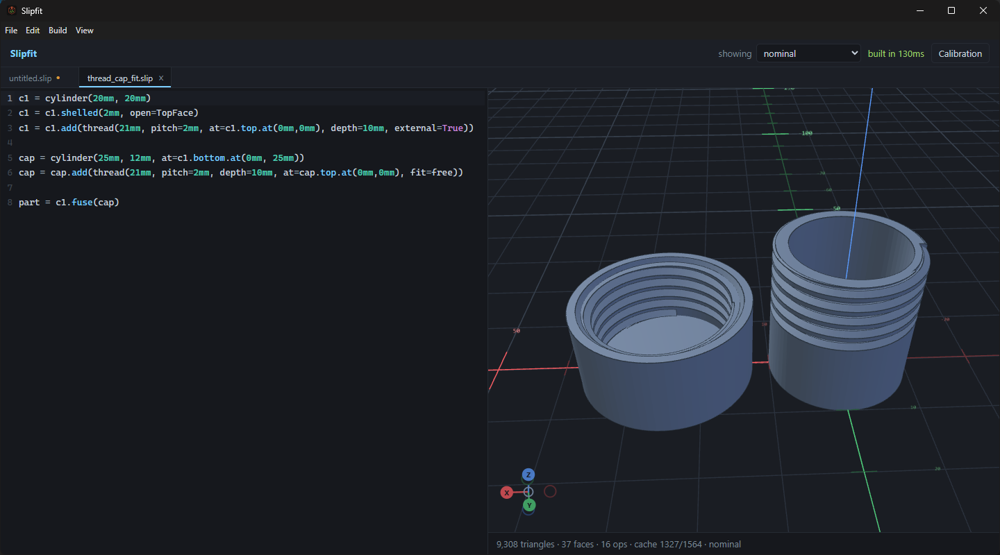
A diameter and a pitch
M8 and the rest of the bolt sizes work exactly the way you'd expect, a named size
like this is really a Thread that already carries a diameter and its own standard
coarse pitch, so thread(M8, …) needs nothing else from you. A bare diameter has no
such default to fall back on, because the metric series simply has no opinion on what pitch a
jar lid should use:
thread(M8, at=peg.top.at(0mm, 0mm), depth=10mm, external=True) # named size, pitch included
thread(40mm, pitch=2mm, at=tube.top.at(0mm, 0mm), depth=12mm) # bare diameter, pitch requiredForget the pitch and Slipfit will warn you
FeatureError: thread(40mm) needs a pitch
= a bare diameter has no standard pitch to fall back on — give one, like
pitch=2mm, or name a size such as M8. A printed thread wants a coarse
pitch: below about 2mm the flanks are shallower than one extrusion widthPrint threads coarse
This is the number that decides whether a printed thread works at all. Radial flank depth
comes out to 0.541 × pitch, and measured against a typical 0.4mm nozzle:
| Thread | Pitch | Flank depth | As 0.4mm extrusions |
|---|---|---|---|
| M3 | 0.5mm | 0.271mm | 0.68 — less than one |
| M8 | 1.25mm | 0.677mm | 1.69 |
| ⌀40 | 2mm | 1.083mm | 2.71 |
| ⌀60 | 4mm | 2.165mm | 5.41 |
An M3 thread's entire flank is shallower than a single bead of plastic, and its crest flat comes
out to a third of a layer, the slicer just rounds the whole feature down into a plain
cylinder. Threads only turn into real geometry around a 2mm pitch, and the
metric coarse series doesn't reach that below M20, for a machine screw, reach for
tapping_hole() instead. More on that below.
The geometry follows ISO 68-1's basic profile, H = P·√3/2, minor diameter
D1 = D − 1.0825·P, 60° flanks, a crest flat of P/8, so the minor
diameters it cuts match ISO 262's published figures instead of risking a second, hand-copied
version of the same standard that could quietly drift out of agreement with it. Right-hand,
single start, no runout: each one left out rather than faked.
A design clearance, not a printer reading
fit moves the major and minor diameter together, so the flank angle itself never
gets touched, but unlike everywhere else where fit comes straight off a gauge, this one
is design clearance, out of Config › Hardware › Fits.
Both halves of a printed thread come off the same nozzle, so there's no un-printed bolt for a
measurement to compensate toward, meaning a thread just reads the same number an ordinary
cut(tool, fit=free) already uses between two of your own parts.
A gap is still measured per face, but it lands on a 60° flank instead of a flat one, so it reads
a little differently from the fits table you already know. A radial offset δ gives
you exactly 0.5 × δ of clearance normal to the flank, and since both halves get
offset:
| Fit | Per face | Flank clearance | Backlash at 2mm pitch |
|---|---|---|---|
free |
0.25mm | 0.25mm | ~0.29mm — loose, assembles anywhere |
close |
0.10mm | 0.10mm | ~0.12mm — needs a calibrated machine |
press |
−0.05mm | interference | will not turn |
Start at free for a printed pair. It's loose enough to soak up the
dimensional error an uncalibrated printer adds to both halves at once, close is
only the right call once you already know your machine holds its size reliably.
fit= on a swept cutting tool
This is exactly why thread() handles its own clearance before the sweep,
instead of growing the finished solid afterward. A fitted cut normally grows the tool
with a face offset in the geometry kernel, and offsetting hundreds of ruled flanks running
alongside each other is a different kind of problem entirely, a hand-built 6-turn ⌀40 thread
used as an ordinary cut(tool, fit=free) tool runs for about 215 seconds and then
fails outright, with "the offset left a null shape." Reach for thread()
itself instead; it never grows a solid after the fact.
Tapping holes, for the sizes a thread can't print
boss = boss.add(tapping_hole(M3, at=boss.top.at(0mm, 0mm), depth=8mm))
This is the feature you actually want for a machine screw. It cuts a plain hole at the tap-drill
diameter D − P, 2.5mm for an M3, 6.75mm for an M8, and the screw carves its own
thread on the way in, pushing material aside rather than relying on your printer to have
resolved a 0.27mm flank cleanly. It's exactly what a workshop already does by hand at these
sizes, just given a proper name.
fit defaults to None here, deliberately, unlike
bolt_hole. D − P is already the right answer; opening it up with a
clearance meant for parts that slide would strip away the exact interference the screw needs to
actually bite. Only pass a fit if your printer runs tight enough to split a boss open. The hole
also asks the slicer for four extra perimeters, since a screw cutting its own thread puts the
wall under hoop tension, and splitting along a layer line is how that kind of wall fails.
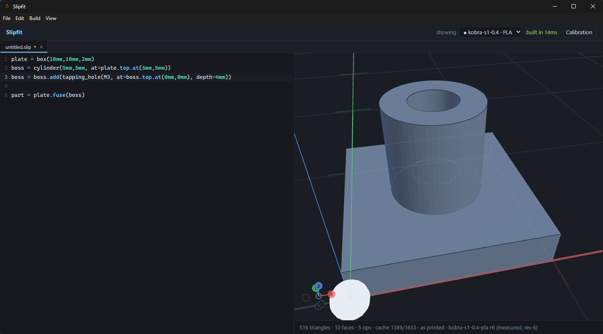
Writing a .slip
Choosing edges and faces
You'll need this to round corners and break sharp edges. It's the part of Slipfit most worth understanding properly, and also the part most likely to trip you up at first.
A solid is made of faces, the flat and curved surfaces you could actually point to with a mouse, and edges, the lines where two faces meet. A plain box has 6 faces and 12 edges. Drill one hole through it, and now it has 7 faces and 15 edges: the wall of the bore is a brand-new face, with a new circular edge at each end of it.
In a mouse-driven CAD program, you'd click the edges you want rounded. Here, you describe them instead, and Slipfit works out that description fresh every time the part gets built. That's the trade, and it's worth being honest about it: clicking is quicker the very first time, but a description still means the right four edges after you've made the plate 20mm longer, moved a hole, and added a slot, no re-clicking required.
Reading a selector out loud
solid.edges(…) and solid.faces(…) both take a description of which
ones you mean. Each name in the catalog below is one test, and three symbols glue tests
together:
| Symbol | Read it as | For instance |
|---|---|---|
& |
and — both must be true | Vertical & LongerThan(20mm) — upright and over 20 long |
| |
or — either will do | TopRim | BottomRim — the top outline or the bottom one; 8 edges on a plate
|
~ |
not — everything except | ~Vertical — every edge that is not upright; 8 on a plain box |
So Vertical & Touching(plate.bottom) reads as "edges that run up and down, and
that meet the plate's bottom face", which on a plate means its four upright corners. Round
brackets group things, exactly the way they do in arithmetic.
the four upright corners
the outline of the top face
the outline it sits on
plate.edges(Vertical) # 4 on a plain box
plate.edges(Linear) # 12
plate.edges(LongerThan(25mm)) # 4
plate.edges(~Vertical) # 8
plate.faces(Planar) # 6
plate.faces(FacingUp) # 1Recipes for the things people actually want
These counts are all for a 40 × 20 × 3 plate with one ⌀6 hole through the middle of it. Every single one is built from the catalog below, none of it needs anything special.
| You want | Write | Matches |
|---|---|---|
| The four upright corners, to round them off | Vertical & Touching(plate.bottom) & OnFace(Planar) |
4 edges |
| The outline where the part meets the bed | BottomRim |
4 edges |
| The outline of the top | TopRim |
4 edges |
| The mouth of the hole, on the top face only | Circular & OnFace(plate.top) |
1 edge |
| Both mouths of every ⌀6 hole | Circular & Diameter(6mm) |
2 edges |
| Every edge on the whole part | Anything |
15 edges |
| The top face itself | TopFace |
1 face |
| The wall of the bore | Cylindrical |
1 face |
The catalog
| Edges only | Matches |
|---|---|
Linear Circular |
Straight ones, round ones. |
Vertical Horizontal |
Straight, running with or square to the build direction. |
LongerThan(q) ShorterThan(q) |
By length. |
Touching(target) |
Meets the target face without lying on it. |
OnOuterWire(target) |
On the target's outer boundary, ignoring its holes. |
| Faces only | Matches |
|---|---|
Planar Cylindrical Conical |
Flat ones, round ones, tapered ones. |
SurfaceIs("bspline") |
Any surface type, by name. |
FacingUp FacingDown Facing(v) |
Flat, and looking that way. |
Highest Lowest |
Where the face begins — see the note below. |
| Either | Matches |
|---|---|
Anything |
Everything. The default. |
Radius(q) Diameter(q) |
A round edge or a round face of that size. |
AtHeight(q) |
Flat at this height. |
OnFace(target) |
Lying on that exact face. |
Four combinations come up often enough to earn names of their own: TopFace,
BottomFace, TopRim, and BottomRim. They're built from the
pieces above too, nothing special is happening under the hood.
A box's four walls all reach up to the top, so comparing tops would select five faces out of
six. On a base with a tower sitting on it, FacingUp matches two faces, the
tower's top and the base's shoulder, while Highest matches only the tower's top.
Three ways to say "near that face"
These differences are not just nitpicking. If you get one of them wrong, you might end up putting a chamfer around a hole you did not intend to chamfer.
| Selector | On a plate with a bore | Means |
|---|---|---|
OnFace(plate.top) |
5 edges | The top face's own edges — 4 rim, plus the mouth of the bore. |
OnOuterWire(TopFace) |
4 edges | The rim only. Holes excluded. Same as TopRim. |
Vertical & OnFace(plate.top) |
0 edges | Correctly nothing — a corner edge meets the top face at a point but does not lie on it. |
Vertical & Touching(plate.top) |
5 edges | The four corner edges — and the bore's seam, which is also upright and also meets the top. The next bit is about that fifth one. |
Why that last one grows a third term the moment there's a hole
The corner-edge selector stops matching just four edges the moment you drill through the plate. A round bore has a seam running down it, right where its surface closes back on itself, and that seam turns out to be an upright edge touching the bottom face too, so it sneaks into the selection:
| On the plate with a ⌀6 bore | Matches | |
|---|---|---|
Vertical & Touching(plate.bottom) |
5 edges | The 4 corners and the bore's seam. |
Vertical & Touching(plate.bottom) & OnFace(Planar) |
4 edges | Only edges lying on flat faces. The corners. |
Which is exactly why the fourth worked example carries that extra term,
and why it also carries expect=4. Nobody actually wants a fillet run down the
inside of a bolt hole, and it's exactly the kind of thing you only notice after the part's off
the bed, not before.
Say how many you expect
expect= turns a description into an actual claim. It's the difference between a
model that breaks loudly the moment the geometry changes and one that quietly rounds the wrong
edges without telling you:
plate.edges(Vertical, expect=4) # returns the 4
plate.edges(Vertical, expect=3) # SelectionError: expected 3 edges, matched 4Use it anywhere you know the count. Selecting the wrong edges silently is the failure that wastes an entire afternoon.
You don't have to work out in your head how many edges something actually matches. Just ask for a number you know is wrong, save, and read the real answer straight off the error:
SelectionError: expected 1 edge, matched 4
= selector was VerticalThen plug the real number back in. Costs you one save, and it's the fastest way to find out whether a description actually means what you think it means.
Put the text cursor on a line, and every face that line produced lights up right in the viewport. Click a face, and the lines that made it light up in the editor. So a fillet that landed somewhere unexpected can be traced straight back to the line that asked for it, no guessing required. See the inspector.
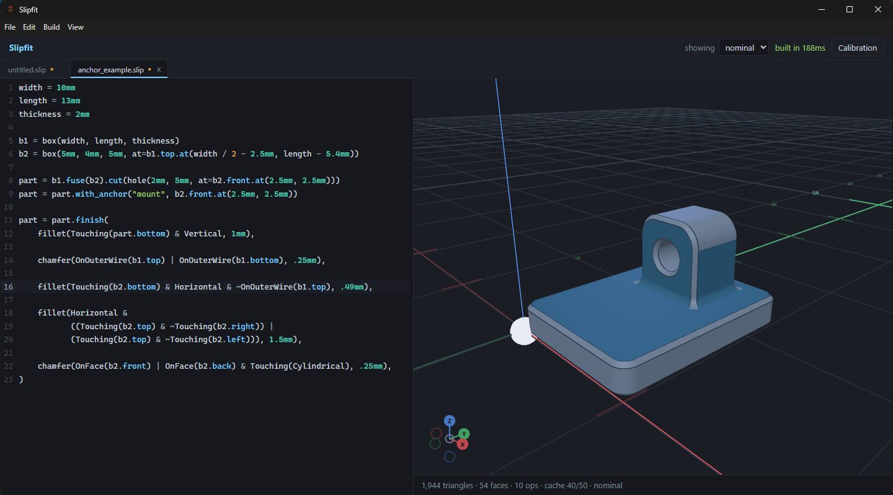
Writing a .slip
Hollowing out, shell
Turn a solid block into a shell of it, at whatever wall thickness you pick, with a face or two left open so you can actually get inside.
case = box(60mm, 40mm, 25mm).shelled(2mm, open=TopFace) # 13632mm3, 11 facesSix faces outside, five in, plus the rim the opening left behind, a full 20mm cube's worth of material scooped out down to a 2mm wall, with the top left off so you can reach the cavity. Want more than one face open? Same as everywhere else a face gets picked out on this page, it's a description rather than a click:
tube = box(60mm, 40mm, 25mm).shelled(2mm, open=TopFace | BottomFace, expect=2)open= is required, it never has a default
A shell with nothing open at all is just a sealed void inside your part, invisible,
unreachable, and impossible to tell apart from having simply forgotten the argument. It's
also the one shell you don't actually need a shell for: body.cut(inner) already
gives you a sealed cavity, with cleaner provenance and no new operation to reach for. What
shelled is really for is the opening.
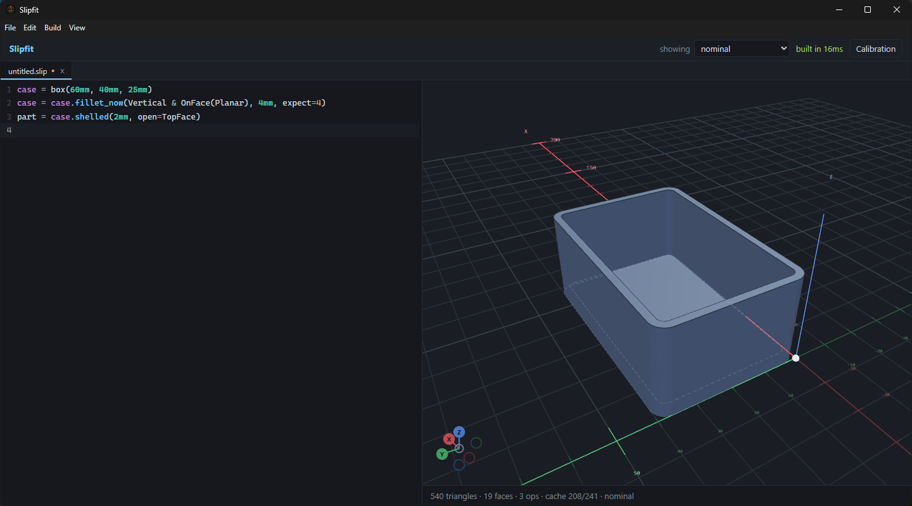
Reaching the inside
A shell adds no anchors of its own, the frame actually worth having is the cavity floor, and that face belongs to a shell that might not have even hollowed out there, so you reach it with a bit of arithmetic on a frame that is real:
floor = case.top.at(10mm, 10mm).offset(-23mm) # (10, 10, 2), facing up
part = case.add(heat_insert(M3, at=floor))
boss = cylinder(8mm, 6mm, at=floor) # standing on the cavity floor
top is the frame the cavity opens through, so walking down it with a
negative offset lands you on the floor still facing the direction a feature needs to be driven
in. Reaching that same point from case.bottom.at(u, v).offset(-2mm) instead faces
the other way, right for something entering the floor from outside, wrong for something sitting
inside it.
Round the outside first and the inside comes along for free
case = box(60mm, 40mm, 25mm).fillet_now(Vertical & OnFace(Planar), 4mm)
case = case.shelled(2mm, open=TopFace) # 19 faces, inner radius 2mmFour rounded outer corners on a 2mm wall come back as four 2mm inner corners, no extra work required, the inner face is just an offset of the outer one, so a blend applied before the shell carries straight through it. Blending after, on the other hand, leaves the inside sharp instead, since the inner faces didn't exist yet when the selector ran, the same ordering rule that applies anywhere a description gets matched against a solid.
A shelled wall still names the line that drew it
Shell a swept profile, and it doesn't lose the ancestry either, both the outer wall and the inner wall it became still answer back to the same run:
case = outline.extruded(20mm).shelled(2mm, open=TopFace) # the outline from earlier
case.faces(FromSegment("nose radius"), expect=2) # the wall, outside and inclick the inner curved wall
▸ shell(2mm) case.slip:21 modified
extrude(20mm) case.slip:19 created
nose radius case.slip:16 from segment
profile(on=top) case.slip:15 applied to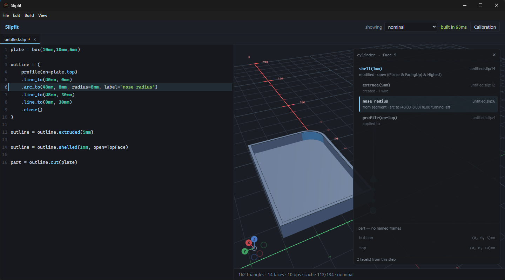
What it refuses, and why
The geometry kernel’s shelling operation sometimes reports success even when given bad input, and will return the original solid unchanged, a shape with zero volume, or a wall that is not the one you wanted. We do not take any of these results at face value. Instead, we check the wall thickness by measuring it on every face that remains closed, pairing each one with its corresponding inner face. This way, if the operation fails, we can report the actual thickness instead of making a guess:
KernelError: shell(11mm) could not be built from blank
= OCCT reported the offset unfinished; the thickest wall blank takes is about 9.96mm
KernelError: shell(12mm) left a wall thinner than asked on knob
= the wall behind knob (case.slip:4) came back 8.00mm rather than 12.00mm, so the
inside is not the shape it should be; the thickest wall knob takes is about 9.93mmThat second error is the dangerous one left unchecked: ask a ⌀20 cylinder for a 12mm wall, and the inner radius passes clean through zero and comes out the other side, a valid solid, a plausible-looking volume, and a cavity that's not remotely the one you asked for. The measured wall thickness is exactly what catches it.
KernelError: shell(2mm) hollowed nothing out of fuse(leg)
= every face came back untouched; no wall thickness hollows fuse(leg) at all — two
of its faces are coplanar and share an edge, one of them from arm (case.slip:1),
which stops the offset before it starts; the boolean that left them can merge
them with simplify=True
That one's got a specific cause and a specific fix: two fused boxes sharing a face plane leave
both halves of it sitting in the result, which stops the offset before it can even start.
fuse(tool, simplify=True) merges them together, and the shell goes through fine.
These checks only catch what's provably wrong, nothing removed, nothing left behind, a wall that isn't the wall you asked for, rather than second-guessing a shape the geometry kernel built self-consistently from a request that was simply too much to ask of the material.
Writing a .slip
Fillets and chamfers
Rounding and bevelling happen last, in one single pass over the finished shape.
A fillet rounds an edge off to a chosen radius. A chamfer cuts it away flat instead, the same distance back along each of the two faces, a 45° bevel wherever those faces meet square. Both just take a description of which edges, plus one size.
a sharp corner
rounded over, to a radius
cut off flat, at 45°
Which one, on a printed part
| Where | Usually | Why |
|---|---|---|
| The outline where the part meets the bed | chamfer(BottomRim, 0.6mm) |
Gives a squashed first layer somewhere to spread, so the part still sits flat. A fillet here would start as a 90° overhang. |
| The mouth of a bolt hole | chamfer(Circular & OnFace(plate.top), 0.5mm) |
A lead-in, so the bolt starts straight rather than catching on the rim. |
| Upright outside corners | fillet(…, 2mm) |
Kinder to hands and to bags, and it takes the sharpness off a corner that would otherwise chip. |
| An inside corner, where a rib meets a wall | fillet(…, 2mm) |
Strength. A sharp internal corner is where a printed part cracks. |
A fillet or chamfer is not compensated the way a fit is: 0.6mm is 0.6mm on every machine, in every material. The table above is printing lore, not anything Slipfit actually knows, your first layer and your slicer have opinions of their own, and a real print is the only way to settle them.
Writing it
part = part.finish(
fillet(Vertical & OnFace(Planar) & Touching(plate.bottom), 2mm, expect=4),
chamfer(TopRim, 0.6mm),
)
finish() takes as many of these as you like, separated by commas, and hands back
the finished solid, so it needs a part = in front of it, same as everything else.
That trailing comma after the last one is allowed on purpose: it turns adding the next line into
a one-line change instead of a two-line one.
Why last
The reason comes down to the description, not the geometry itself. A description run at the end gets matched against the completed solid, so it catches every edge the part ended up with. Run one in the middle instead, and it only gets matched against a half-built shape, missing everything created afterward.
That's a real, practical difference. Take a plate, cut a notch in one side, and fillet the vertical corners:
| Order | Faces in the result |
|---|---|
Cut, then finish(fillet(…)) |
18 |
fillet_now(…), then cut |
14 |
Different solids entirely. The notch creates vertical edges the early pass never even saw.
Where the half-built shape really is what you meant, a cutting tool you actually want rounded,
fillet_now() and chamfer_now() do it right there on the spot.
Sometimes reaching for fillet_now() or chamfer_now() makes sense,
it can make selection simpler, or shape a cutter before the .cut() operation uses
it.
How big a blend can be
Big enough to fit inside the material, and not one bit bigger. It has to eat into both faces an edge separates, on every edge you selected, so a radius that's perfectly fine on one corner can still fail because of the short face sitting right next to it, and the error names the whole set rather than singling out one edge:
KernelError: fillet failed on 4 edges at 3mm
= 4 of 4 edges cannot take 3mm
That's a 3mm fillet asked for on the top outline of a 3mm plate, the round would need to
consume the plate's entire thickness. The message names which edges, not just
that the fillet as a whole failed, each one gets tried on its own, and the search actually
bounds the largest radius it would take, so 2.99mm isn't a guess. Where only some
of a selection fails, the message says exactly that too: 3 of 8 edges cannot take 2mm —
the largest that works is 1.4mm; the other 5 succeeded.
Round the four upright corners of the same plate instead, and the limit becomes the 20mm width, 9.9mm works, 10mm doesn't, because two 10mm radii on a 20mm side leave no straight bit left between them. Ask for exactly that, and each edge is perfectly fine alone, so the diagnosis tells you the honest story instead, that the edges are interfering with each other as a set, rather than pinning the blame on one:
KernelError: fillet failed on 4 edges at 10mm
= each of the 4 edges takes 10mm on its own — the blends
interfere with each otherThat calls for a different fix than one single tight edge would, move one edge, or blend the set in two separate passes, which is exactly why it's reported on its own rather than folded into the same sentence as an ordinary failure.
There's no arithmetic to work out here. Just come down in steps until it fits. A failed blend is an error you catch on save, not something that ever reaches the printer, and the viewport only lights up the edges that actually failed, narrowing eight selected edges down to the two or three actually worth looking at.
A fillet earlier in the list changes what a later chamfer can go
on to select. Rounding four corners turns a 4-edge rim into an 8-edge one, 4 straights and 4
arcs, so an expect=4 on the chamfer that comes after will fail. That's the claim
doing exactly its job; just read the count and update it.
Writing a .slip
Using another file
Write a part once. Use it from every model that needs it, and fix it in exactly one place from then on.
Copy-pasting a standoff into four different models means correcting it four separate times,
and finding out you missed one only after the print's already off the bed.
use() runs another .slip and hands you back everything it defined:
parts = use("./parts/standoff.slip")
pillar = parts.standoff(height=12mm)What comes back is that other file's names, reached through whatever name you chose for it,
here, parts:
| Written | Is |
|---|---|
parts.standoff(height=12mm) |
A recipe that file wrote, called with the size you want. Gives back a solid. |
parts.edge_margin |
A number it set. Its author's advice about the part, in a form you can do arithmetic with. |
parts.part |
The solid it built, if it built one. |
The name in front of the dot is entirely yours, parts, rails,
fixings, whatever reads best to you. The names after the dot belong to the file
you included.
Turning a shape into something worth including
Nothing marks a file as "includable", it's just an ordinary .slip, same as any
other. What actually separates one worth including from a plain copy-paste comes down to three
small decisions:
-
Move the shape into its own file
Anywhere you like. A
parts/folder sitting next to your models is the usual arrangement, and it keeps the paths nice and short. -
Wrap it in a
def, so it has dials to turnA fixed 10mm standoff only gets used by one model. A standoff whose height you can ask for gets used by all of them.
-
Give it an anchor to be mated by
with_anchor("seat", …)declares the spot that goes up against something else, so whoever includes it never has to work out its coordinates.
edge_margin = 6mm
def standoff(height=10mm, outer=9mm, bore=3.2mm):
pillar = cylinder(outer, height)
drilled = pillar.cut(hole(bore, height, at=pillar.top.at(0mm, 0mm)))
return drilled.with_anchor("seat", pillar.bottom)Reading that def, if you have never met one
A def is just a recipe with dials on it (what Python calls a function with
parameters). The first line names the recipe and lists its dials, each one carrying the
setting it falls back to if nobody touches it. The indented lines underneath are the actual
steps the recipe takes, that indentation is what says "this belongs to the
recipe", and it's the one spot in Slipfit where whitespace changes what something
means. return is what it hands back to whoever called it.
- def standoff(…)
- "Here's a recipe called
standoff." It does absolutely nothing until somebody calls it. - height=10mm
- A dial named
height. If the caller doesn't say otherwise, it's 10mm. - pillar = …
- Indented, so it's a step that lives inside the recipe. The name
pillaronly exists in there, nowhere else. - return drilled…
- "This is the answer." Whatever comes after
returnis exactly what the caller gets back.
| Called as | Gives you |
|---|---|
parts.standoff() |
10mm tall, ⌀9 outside, ⌀3.2 bore — every default. |
parts.standoff(height=12mm) |
12mm tall; the other two dials untouched. |
parts.standoff(height=12mm, outer=12mm) |
12mm tall and fatter; the bore left alone. |
Dials are named, so you set only the ones you actually care about and skip the rest, in whatever
order suits you. That's the exact same name=value arrangement at=
and axis= use, for the same reason, and it's the entirety of the
parameterization mechanism. There's nothing else here to learn.
This file never sets part, and that's fine, it's a library, not a standalone part.
A file that does set part works both ways at once: something you can open
and print on its own, and a component somebody else can pull into their own file.
Where the file is
~/models/
lid.slip use("./parts/standoff.slip")
bracket.slip use("./parts/standoff.slip")
parts/
standoff.slipPaths are relative to the file that wrote them.
use("./parts/standoff.slip") looks right next to this file, so a whole
folder of parts can be moved around, zipped up, and sent to someone else without editing a
thing. Full paths work too, they just won't travel to anyone else's machine.
./ means "starting right here"; ../ means "up one folder from
here." If the file's never been saved, here doesn't exist yet, and a relative
use() tells you exactly that rather than guessing at something.
Putting it where you want it
An included part gets built wherever its own file built it, usually right at the origin.
.placed() brings one of its anchors onto a point on your part instead:
pillar = parts.standoff(height=12mm).placed(
"seat", onto=plate.top.at(10mm, 10mm)
)
part = plate.fuse(pillar)
Every anchor points outward from the material it belongs to, and .placed() brings
the two together nose to nose, the standoff's seat faces down, the
plate's top face faces up, and they meet in the middle. That's exactly why the pillar ends up
standing on top of the plate rather than sunk into it, and it works the same way two magnets
snap together:
Two small adjustments cover most of what's left. spin=30deg turns the part about
that shared axis, and .offset(-1.5mm) on the point sinks it into the face instead
of just seating it on top:
.placed("seat", onto=plate.top.at(10mm, 10mm).offset(-1.5mm), spin=30deg)
For arrangements no anchor quite describes, .moved(x, y, z) and
.rotated(30deg, about=plate.top) are there for you. Reach for .placed()
wherever it fits, though: a wrong anchor name throws a loud error, while a wrong coordinate is
just a part quietly sitting in the wrong place.
The whole thing
A plate with four standoffs on it, none of the standoffs are written anywhere in this file:
plate_x = 70mm
plate_y = 50mm
thickness = 5mm
height = 12mm
parts = use("./parts/standoff.slip")
plate = box(plate_x, plate_y, thickness)
bed_face(plate.bottom)
# The four corners, inset by the margin the library recommends.
inset = parts.edge_margin
corners = [
(inset, inset),
(plate_x - inset, inset),
(inset, plate_y - inset),
(plate_x - inset, plate_y - inset),
]
part = plate
for x, y in corners:
pillar = parts.standoff(height=height).placed(
"seat", onto=plate.top.at(x, y)
)
part = part.fuse(pillar)
part = part.finish(
chamfer(BottomRim, 0.6mm),
)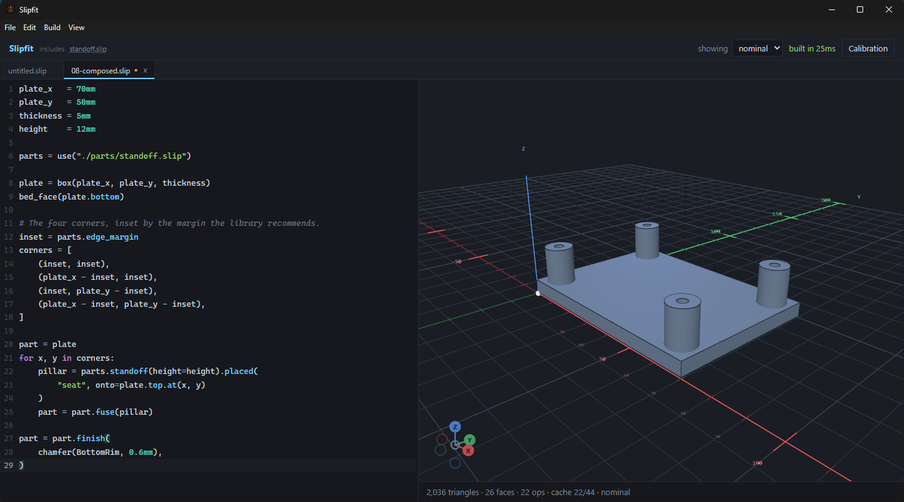
When it doesn't work
Every one of these names exactly which file's actually wrong, and tells you what that file does offer instead:
IncludeError: standoff.slip defines no 'standof'
= it defines: edge_margin, standoff
IncludeError: standoff.slip defines no `part`
= that file is a library, not a part — call one of its functions
instead: edge_margin, standoffWhat you get for free
- Edit the library, and everything rebuilds. Slipfit watches every file your model pulls in, so correcting the standoff and rebuilding a model that uses the standoff gets the change.
- Errors point at the right file. A mistake inside
standoff.slipgets reported against that file, with its own line underlined, not against the line where you wroteuse(). - The inspector crosses right over between files. Click a standoff's wall, and the
chain names
parts/standoff.slip:23, then walks back out to the line in your model that placed it.
Opening a model that includes three others means running all four of them, so the trust
prompt lists every single one before anything executes. A .slip from a stranger
is a program from a stranger, and that's just as true of the files it pulls in as it is of the
file you actually clicked open.
Writing a .slip
Bought parts, use_step()
The things you model around are usually parts you didn't draw yourself, a servo,
a bearing, a connector. use_step() reads one in and hands you back an ordinary solid.
servo = use_step("./vendor/sg90.step")
part = plate.cut(servo.grown(0.4mm)) # 0.4mm of clearance all round, then cut
What comes back is placeable, cuttable, measurable, and anchorable, everything a
box() is. examples/bearing-mount.slip walks through exactly this: a
608 bearing read straight out of a 39 kB vendor file, ⌀22 × 7mm, 4 faces, seated in a block
sized from the import's own size(), rather than from numbers typed twice into the
file by hand.
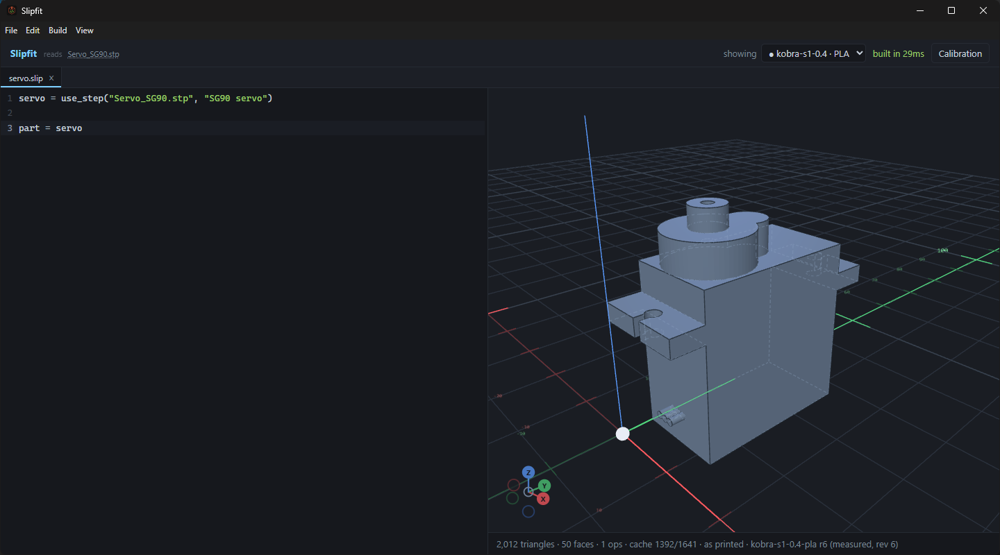
Millimeters, no matter what the file says. A STEP file declares its own unit, and the reader converts on the way in: a 25.4-unit cube in a file declared in inches arrives as 645.16mm, which is what it actually is. Nothing about a part that comes in 25.4× too large fails outright, it just doesn't fit, so that conversion is the one thing here pinned down by a real test rather than simply assumed correct.
One anchor, called origin
It's the file's own datum, sitting at (0, 0, 0) in the file's own coordinates.
There are deliberately no bounding-box anchors, a bought part's faces aren't top
and bottom, and six frames floating on a box nobody actually drew would look exactly
like a primitive's anchors while meaning something entirely different. Name what you actually
need, once:
bearing = use_step("./vendor/bearing-608.step")
bearing = bearing.with_anchor("far_face", bearing.origin.at(0mm, 0mm).offset(7mm))
That 608 was drawn on its own axis, so origin is already right at the middle of
the face nearest the file's own view; far_face is the other one, 7mm along. From
here on, the model just says bearing.far_face and never has to repeat that 7 again.
Several solids is an error, not a guess
Most vendor files actually hold more than one solid. That gets refused, by name, Slipfit never just picks the first one and hopes for the best:
StepError: FAULHABER_2342L-012CPR.step contains 51 solids, not one
= use_step("FAULHABER_2342L-012CPR.step", "…") picks one: Main Motor, Top,
Thin shaft, Thick shaft, Cage, Gear, White, Plastic protector, Black box,
Metal, Plastic protector 2, Plastic gear ×2, and 21 morehousing = use_step("./vendor/FAULHABER_2342L-012CPR.step", "Top")
Taking the first solid silently would be exactly the confident-but-wrong answer this tool
refuses everywhere else, and it's not a hypothetical worry, the first solid in that gearmotor
file is Main Motor, its bare can rather than the gearbox somebody actually wanted to
mount, and the first solid of a Raspberry Pi 4B model is the bare board, missing the connectors
that were the whole reason you wanted clearance around it in the first place.
Two more things it refuses, both things real vendor files actually do to you:
- A name shared by several solids. That same gearmotor carries nine solids all called
Gear 4mm int diam. The file gives them one shared name, so there's no way to tell them apart here, and Slipfit says so instead of silently picking one at random. - A file with no solids in it at all. A surface-only model is just an export setting somebody upstream chose, and the error counts the shells and faces it did manage to find, "this file is surfaces" and "this file transferred nothing" call for two completely different fixes.
Provenance is complete, not degraded
Click any face of an import, and the inspector names the use_step() call and its
line, the exact same way a library part's chain names the file it came from:
click the bearing seat
▸ cut(grow(+0.15mm)) bearing-mount.slip:38
grow(+0.15mm) bearing-mount.slip:38
placed(origin) bearing-mount.slip:34
use_step("bearing-608.step") bearing-mount.slip:18That's the whole truth of it: there's no ancestry inside the import, because there really is no ancestry inside it, the file itself is where it came from. So an imported face carries no "degraded" mark. That mark specifically means resolved through a fallback elsewhere on this page, and slapping it here would be a false claim about a shape whose entire history is exactly one line long.
Opening a STEP file parses it; nothing inside it ever executes. It still needs to exist on
disk, though, and still costs real build time on a large one, the Raspberry Pi board above
took 14.8 seconds on first read, and is free on every rebuild after that, pulled from the same
op cache everything else uses. See Opening a file isn't the same as running
it for how this gets disclosed differently from a .slip.
Writing a .slip
Multiple bodies, assembly()
part has always named the one solid a model produces. It can now name
several at once, and each one becomes its own object in the file it exports to.
part = assembly(body=jar, lid=cap)
A bare solid bound to part still means exactly what it's always meant, this
widens what's possible, it doesn't migrate anything, and nothing you've already written needs
to change. assembly() takes keyword arguments rather than a plain list, which buys
you three things for free: the names are guaranteed unique (Python refuses a repeated keyword
before this function's even reached), they're written in the exact order you gave them, and each
one's a proper identifier, so a name is always something you can hand straight back to
use_step(path, "lid").
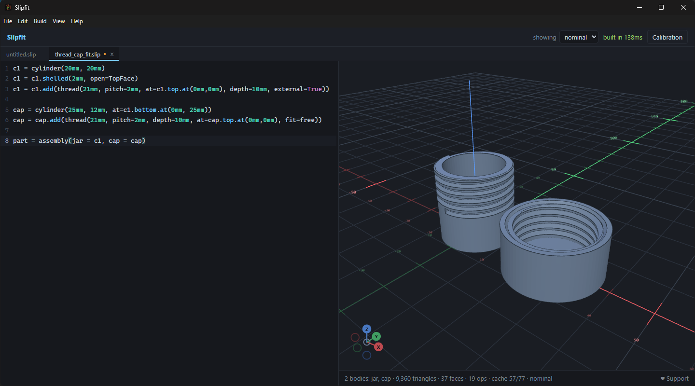
Names are declared, never guessed
Slipfit won't try to work out what to export by scanning through your variables, a cutting
tool and an abandoned experiment are variables too, and promoting either one into an exported
object is exactly the kind of mistake you only find after the print's already done. If a solid
isn't named inside assembly(), it's simply not in the file, no matter how many
lines of the model went into building it.
The name belongs to the declaration, not the variable: assembly(base=chassis)
writes a body called base even though the model called it chassis
everywhere else. That split is deliberate, the variable name is what the anchors panel and the
viewport's gizmos use while you're working, while the body name is what actually ships. A solid
can even appear under two names at once, assembly(left=arm, right=arm), which just
means two copies of one part, a perfectly ordinary thing to want out of a printer, not the
copy-paste mistake it might look like at a glance.
What each export format does with several bodies
| Format | Several bodies become |
|---|---|
| 3MF | One named part volume per body, in the container's <components>
structure — one object your slicer opens, with each body kept apart inside it. |
| STEP | One named product per body. use_step(path, "lid") reads one back out —
exactly what lets you buy back your own design later. |
| STL | One mesh. An STL has no notion of an object at all, and the export report names the bodies it had to flatten together. |
examples/tour/09-assembly.slip walks through exactly this: a jar with an external
thread on its neck and a cap that screws onto it, built as one file and exported as two named
objects, body and lid, 23,127.69mm³ across 14 faces for the jar,
11,445.61mm³ across 19 for the cap.
With two or more bodies on screen, the inspector title gets qualified by name,
lid · planar · face 3 rather than just planar · face 3, because
"which one did I just click" is the very first question a pick raises the moment there's more
than one thing to click on.
Writing a .slip
Clearance and interference
Two more values to check, so whether your parts actually fit together is something you can
assert up front, rather than find out the hard way at the printer.
assert clearance(lid, base) >= 0.15mm, "the lid needs room to drop in"
assert overlap(pin, base) > 0mm3, "the pin is supposed to be a press fit"| Function | Answers | Where they touch or interfere |
|---|---|---|
clearance(a, b) |
A length — the narrowest gap between two solids. | 0mm. A distance is never negative, so this is never a signal that two
parts overlap — that question is overlap()'s. |
overlap(a, b) |
A volume — how much space two solids share. | 0mm3 where they do not. |
Slipfit measures; you judge. There's no built-in clearance threshold anywhere in the tool, and that's deliberate: a press fit is supposed to overlap, so the right number varies from one pair of parts to the next, and only you actually know it. Bake one in, and every correct press fit in every model would report as a fault.
Every pair, right on the export report
You don't have to write an assert to see these numbers at all. Every pair of
bodies named in assembly() gets measured automatically and
listed on the export report, one row apiece, whether you asked for it or not:
overlap base ↔ pin 10.71mm3 press fit declared -0.05mm/face
clearance base ↔ lid 0.2mm
clearance pin ↔ lid 0.2mm
The first row gets a verdict because the model said something specific about that pair,
base = base.cut(pin, fit=press) declared a press fit, so the measured overlap gets
compared right against it. The other two rows carry no verdict at all: nothing in this file said
what base and lid are supposed to be to each other, so they just get a
number with no opinion attached. A .placed() mate is the
other kind of declared intent, two frames declared coincident count as a declared clearance of
zero.
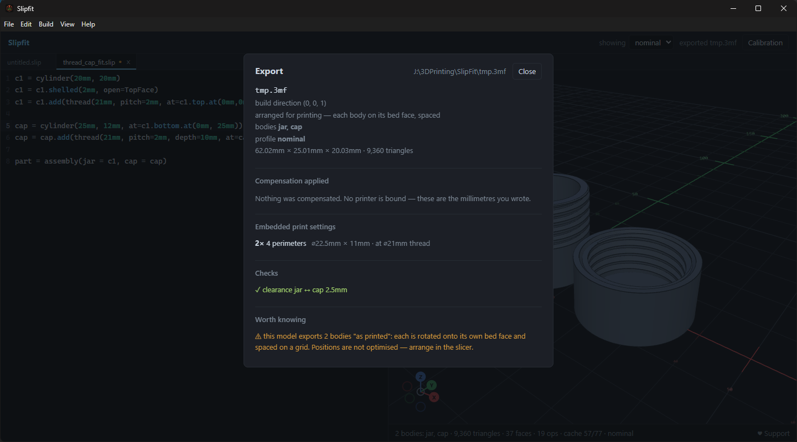
The pairwise scan runs over whatever assembly() names, not over every solid
your model happens to build. A cutting tool that never made it into assembly(),
the pin you subtracted and then quietly discarded, never shows up on this list, because it's
not in the exported file either.
Parts that fit
Bolts, nuts and inserts
Three words that say what goes in the hole, letting the actual millimeters get sorted out later, once you know your printer.
bed_face(plate.bottom)
part = plate.add(
bolt_hole(M3, at=plate.top.at(10mm, 15mm), fit=free),
nut_trap(M3, at=plate.bottom.at(40mm, 15mm)),
heat_insert(M3, at=plate.top.at(50mm, 15mm), boss=True),
).add() applies these one after another, exactly the way .finish()
applies fillets.
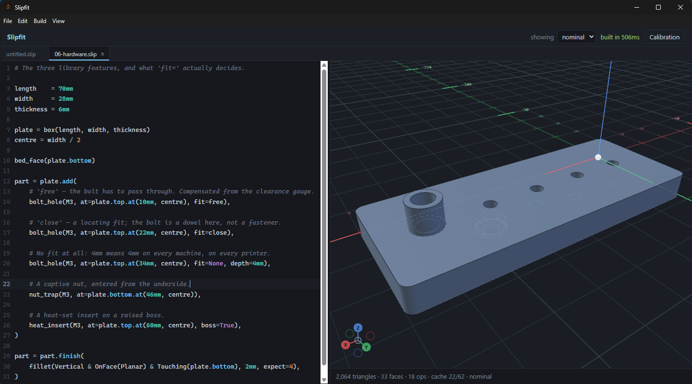
| Feature | Cuts | Compensated on |
|---|---|---|
bolt_hole |
A clearance hole, all the way through unless you give it a depth=. |
The hole diameter, by fit. |
nut_trap |
A hex pocket, a lead-in chamfer, and a clearance hole through to it. | The nut's across-the-flats size. |
heat_insert |
A pocket, plus a raised boss if you ask for one. | The insert's outside diameter. |
A jar lid, a screw-on cap, a case with a threaded boss, thread() and
tapping_hole() live under Threads, back in
Writing a .slip. They're sized the same way as everything else on this page, but
they're not compensated the same way: nothing here gets measured off a gauge, because
a printed thread's other half is printed too.
fit=, how tight the bolt hole is
| Value | Means |
|---|---|
free |
The bolt passes through freely. The default, and the one the shipped gauge measures. |
close |
A locating fit — the bolt is acting as a dowel, not a fastener. |
press |
An interference fit. |
None |
No compensation at all. The hole is exactly the size it says, on every machine. |
Only clearance holes take a fit. A nut trap that's loose is just a failed nut trap, and an insert pocket has exactly one right answer, so neither one gets offered the choice.
hole(7mm, …) stays 7mm on every printer, forever. Only a declared
fit=, a nut trap, or an insert pocket ever gets your workshop's own answer
applied. A bare dimension stays bare, which is exactly what makes it safe to type one in the
first place.
bolt_hole(M3, fit=free) and body.cut(peg, fit=free) use the same
word for two genuinely different jobs. The first is your printer's measured error, applied at
export time. The second is design clearance between two of your own
parts, present the whole time you're editing. Same word, because from where you're
sitting, both boil down to "how much room does this actually need."
bed_face(), which way up it prints
bed_face(plate.bottom) records one decision: this face goes down on the bed. It
matters for compensation features, a hole 10° off vertical
is a genuinely different print.
Sizes and standards you can name
Threads: M2 M2_5 M3 M4 M5
M6 M8 M10 M12.
| Standard | What it is | Tabled for |
|---|---|---|
DIN_912 |
Hex socket head cap screw (ISO 4762) — the usual allen bolt | M2–M12 |
ISO_7380 |
Hex socket button head | M3–M10 |
DIN_934 |
Plain hex nut (ISO 4032) | M2–M12 |
DIN_985 |
Nyloc nut | M3–M12 |
Ask for a size outside the tabled range, and you get an error naming the actual range, rather than a plausible-looking head diameter somebody just invented for you on the spot.
A cut against something that touches nothing succeeds and changes absolutely nothing, so a feature placed off the part would still give you a clean build and a silently missing hole. Slipfit checks for this and refuses:
M3 clearance hole at top(80.00, 10.00, 3.00) removed no material
= the position is off the part, or the feature sits entirely outside it
— check the anchor and the offsetsInserts are a product, not a standard
There's no real standard for heat-set inserts. A CNC Kitchen M3×5.7 measures 4.6mm across the knurl; a generic marketplace one might be 4.0mm with a completely different taper. So which insert you actually own is part of your workshop, exactly like your printer is, not something a shared file can ever tell you.
Describe yours in Build ▸ Calibration… ▸ Hardware: pick the size, give the knurl at its widest point and the body end to end, tick I measured these if you genuinely did, and press Set insert.
| The panel asks | Measure |
|---|---|
| Size | M3 to M12. Only M3 ships configured — shipping plausible-looking numbers for sizes nobody's confirmed they own would just be inventing hardware. |
| Outside diameter | The knurl at its widest. This is the number the gauge steps away from, so a guess here costs you a whole print. |
| Body depth | End to end. |
| Flange (optional) | Leave it blank for a plain straight-knurled body. Blank means absent, which isn't the same thing as zero. |
| "I measured these" | A real claim, not a formality — it shows up on the export report, so a figure copied off a marketplace listing never gets presented as one you actually took with calipers. |
A reading is filed against the exact knurl it was taken on, so switching brands leaves your old measurement true of the old insert and never consulted for the new one. But between changing brands and printing the new gauge strip, an export gets answered from the old reading, and if the new diameter happens to fall between two old ones, it gets answered with no warning at all. The Hardware panel shows which knurl each reading was taken on, so you can spot the mismatch before it turns into a part.
heat_insert(boss=True) is opt-in, because whether a boss is even needed depends on
how much material sits under that point. A boss you didn't ask for is a confidently wrong
answer; a missing one is visible the moment you look.
Parts that fit
Calibration
Print three small gauges, push real hardware into them, and click the step the hardware fit into. About 40 minutes of printing, once, and then never again for that printer. Three more, stood on edge, cover holes that run sideways.
Slipfit calibrates by fit gauge, not by caliper. Measuring a printed hole with calipers bakes your own technique into every future export, jaw pressure on an elephant-footed edge, tips that never quite reach true diameter, plastic that's still cooling as you measure it, and on top of that, it measures an idealized fastener rather than the actual one sitting in your drawer. Pushing the real bolt through a row of real holes measures the thing you actually care about.
It all happens in one window. Open Build ▸ Calibration… (Ctrl/Cmd + K) and a sheet slides over the viewport with five sections on it, laid out in the order you'll actually need them.
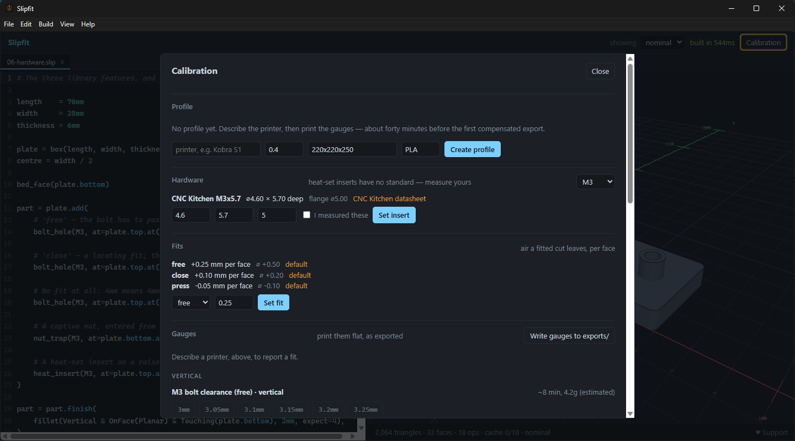
| Section | What it is for |
|---|---|
| Profile | Which printer this is, and what has been measured on it. Also where you add a second material and roll back a bad reading. |
| Hardware | Which heat-set inserts you own, and the thread size everything below is about. |
| Fits | Air a fitted cut leaves, per face. Design intent — nothing here is measured. |
| Gauges | Six strips in two groups, vertical and horizontal, with a print estimate each. Writes them, and takes your answer. |
| Compensation in this build | What the model currently open actually got, so you can see the loop having worked. |
Every action reports there, describing gauges…, building gauges…,
recorded bolt_clearance.free-m3 at +0.20. Not sure whether a click actually
landed? That line has your answer.
-
Check what's in the drawer
The gauges get built for whatever hardware Slipfit currently thinks you own:
Ships as bolt DIN 912 hex socket cap screw, M3 nut DIN 934 plain hex nut, M3, 5.5mm across the flats insert CNC Kitchen M3×5.7, 4.6mm across the knurl You'll need a few of each, plus a soldering iron with an insert tip for the third gauge. Any M3 cap screw will do fine. Nyloc nuts measure the same across the flats as plain ones, so the nut gauge still measures exactly the right thing.
-
Describe your printer
With no profile yet, the Profile section says so and shows you one row of boxes. Fill them in and press Create profile:
Box Put in printer Whatever you call it — Kobra S1. Only you read this.nozzle, mm 0.4unless you've swapped it out. This is the number that actually matters: extrusion width drives hole undersizing, and layer height barely touches width at all.build volume, mm 220x220x250. Check it against your actual bed — it's only used for the "does this fit" line at export time, so a wrong number just misleads you rather than breaking anything.reference material PLA, or whatever you print the most. Everything else you add later borrows off this one.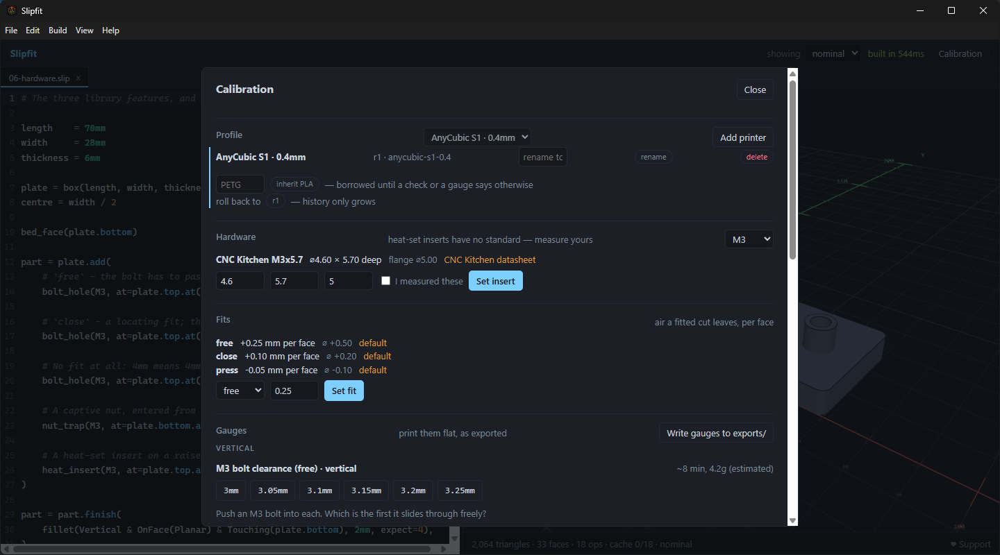
The form disappears once there is a profile; the panel above it takes its place. That makes one profile at revision 1, filed under printer plus nozzle,
AnyCubic-S1-0.4. From now on, the section shows that profile instead of the form: its name, which revision you're on, and a table of materials with a mark against each one. -
Say which inserts you actually own
Do this before printing anything at all, because the insert gauge gets built off your knurl. In Hardware, pick the thread size from the dropdown on the right, then fill in the row underneath and press Set insert.
Box Measure thread size M3 to M12. Only M3 ships configured — shipping plausible numbers for sizes nobody's confirmed owning would just be inventing hardware. knurl ⌀ mm The knurl at its widest. The gauge steps away from this number, so a guess here costs you a print. depth mm The body, end to end. flange ⌀ Leave blank for a plain straight-knurled body. Blank means absent, which isn't the same thing as zero. I measured these A real claim, not a formality — it reaches the export report, so a figure copied off a marketplace listing never gets presented as one you actually took with calipers. That dropdown drives the whole sheetThe size you pick in Hardware is the size the Gauges section below describes. For the insert, those two are really one question, a station is just your configured knurl stepped away from itself, so choosing M5 and gauging M5 can't end up as separate choices.
-
Write the gauges and print them
The Gauges section already describes every strip before you've built anything at all, name, print estimate, the stations, and the question each one asks. There are six of them, in two groups with a heading over each: the three features, bolt clearance, nut trap and insert pocket, once vertical and once horizontal. Press Write gauges to exports/, and it builds all six and tells you exactly where each one landed.
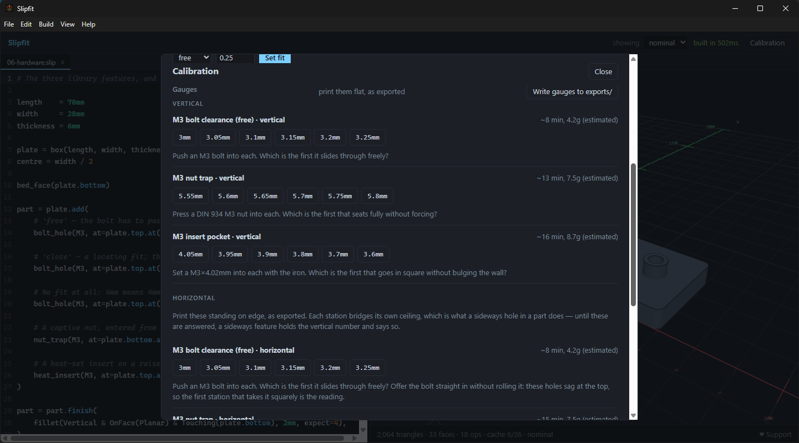
The stations are grayed out until a profile exists, without a profile there would be nowhere to record an answer. Why the same three, twice
A hole that runs up out of the bed and a hole that runs across it aren't the same feature to your printer. The vertical one prints as a stack of rings, round and a little small. The sideways one has to print its own ceiling across open air, and that ceiling sags, so it comes out a droopy oval, commonly 0.3mm or more short in Z while nearly right in X. One strip can't measure both, so every feature gets a strip at each attitude.
The dashed circle is the hole you drew; the green line is what prints. The sag is exaggerated here, but it's real, and it's the reason one strip can't answer for both. The horizontal gauge is really the bridged gauge. A sideways hole's actual defect isn't that it's sideways, it's that its ceiling has to print over open air. "Horizontal" and "bridged" are one print condition wearing two names, so there's no third family here, and nothing gets gauged at the angles in between: a strip at 37° needs supports, and measuring what a support did to a surface isn't measuring your printer. Anything between the two gets a straight line drawn between the two readings.
Gauge Prints Size Rough cost M3 bolt clearance flat 60 × 12 × 5mm ~8 min, 4.2 g M3 nut trap flat 80.1 × 15.4 × 5.4mm ~13 min, 7.5 g M3 insert pocket flat 75.6 × 14.6 × 8.7mm ~20 min, 11.3 g M3 bolt clearance, horizontal on edge 60 × 5 × 12mm ~8 min, 4.2 g M3 nut trap, horizontal on edge 80.1 × 5.4 × 15.4mm ~13 min, 7.5 g M3 insert pocket, horizontal on edge 75.6 × 8.7 × 14.6mm ~20 min, 11.3 g The horizontal three are the exact same geometry stood on edge, same thickness, width and pitch, just turned so the stations run across the build direction instead of up it. Those times come from an assumed flow rate, not an actual measurement, they're just there to rank the strips by cost. Your slicer's own number is the real one to trust.
Three is a working calibration. Six is a complete one.The vertical three are still the set you can stop after. A profile holding only them compensates every vertical feature exactly as it should, and a sideways feature simply borrows the vertical reading, saying so on its own line in the export report, honest rather than missing, not a warning you need to chase down.
So print the vertical three, get exporting, and come back for the horizontal three the day you have a part with a hole through its side. Or print all six in one session, on one spool, and be done with it.
The print settings decide whether any of this is even worth doingSlice them with the exact profile you'll print real parts with, same layer height, nozzle temperature, speeds, flow, and filament. A gauge printed at 0.2mm and parts printed at 0.28mm have just measured a machine you're not actually using.
Print them exactly as exported, and don't rotate them. The vertical three lie flat with their stations running up out of the bed; the horizontal three stand on edge with their stations running through them sideways. The attitude is the measurement: a horizontal strip laid flat has measured the vertical case a second time and filed it under the wrong angle, which is worse than not printing it at all.
No supports, no scaling. A brim's fine, and the horizontal strips are tall and narrow enough to want one. Print everything in one session on the same spool if your bed allows it.
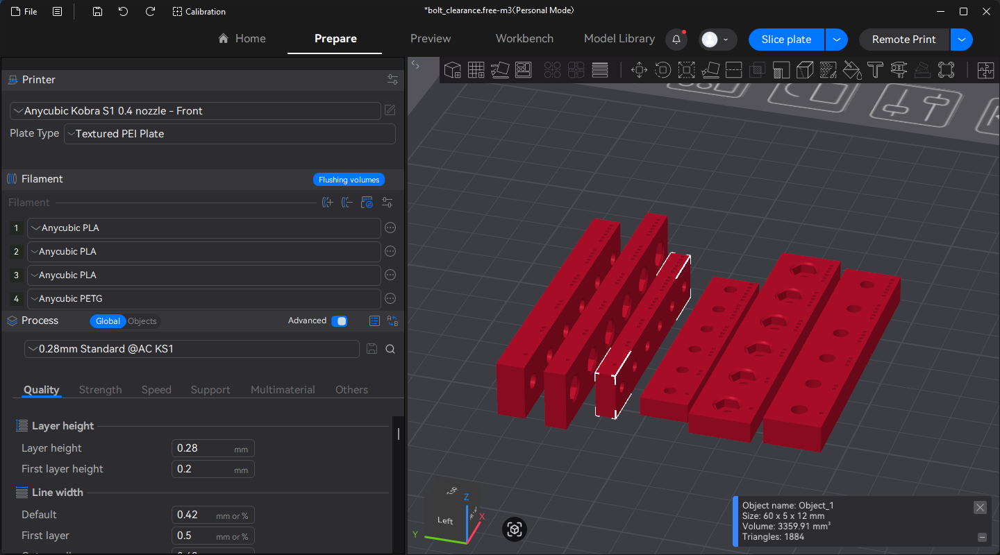
Six strips, one plate, one spool. If the slicer shows the horizontal three lying down, something rotated them. Waiting on the panelDescribing all six gauges takes a second or two the first time you open the sheet for a size, and is instant every time after that.
-
Push real hardware in
Let them cool to room temperature first, warm plastic is still shrinking, and a fit taken at 40°C isn't one you can reproduce later. Don't clean up the first layer; the elephant foot at the mouth of a hole is part of what the gauge is actually measuring.
Each gauge has six stations, numbered in tally notches along one long edge, count them with a fingernail. Work from station 1 upward and stop at the first one that answers the question, since every station after it also fits and is just looser than it needs to be.
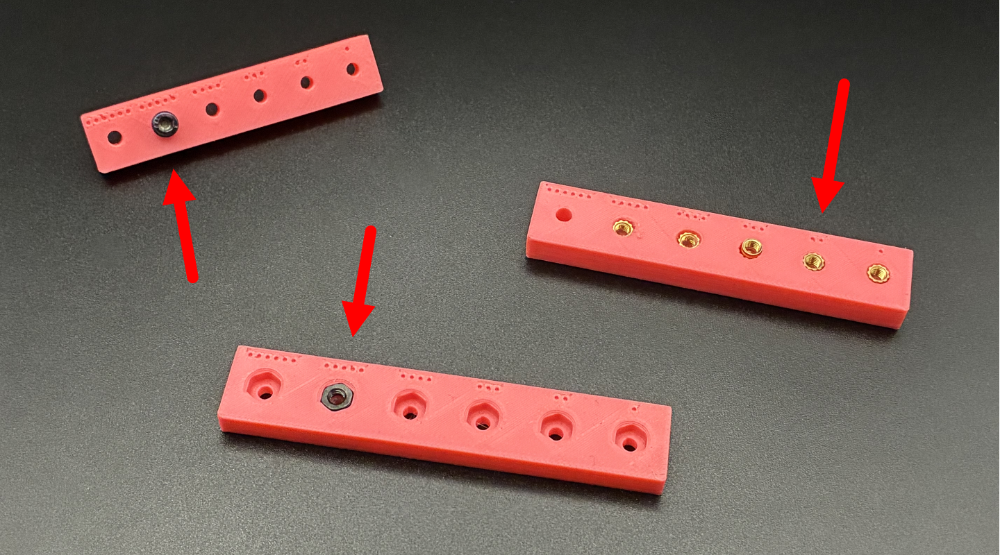
The measurement is a bolt and a fingertip. There is no caliper anywhere in this loop. Gauge The question What “right” feels like Bolt clearance Which is the first it slides through freely? Drops through under its own weight, or slides with a fingertip and no twisting needed. Test it vertical so gravity actually tells you something. Nut trap Which is the first that seats fully without forcing? Goes in with firm thumb pressure, sits flush, and doesn't spin once seated. If you need pliers, it's too tight. Insert pocket Which is the first that goes in square without bulging the wall? Enters square, stops flush, no swelling or cracking, and won't spin when you nip a bolt up in it. The questions are the same on both attitudes, and so is the rule about stopping at the first station that answers. What changes on the horizontal strips is how you offer the hardware.
On a horizontal strip, go straight in and don't roll itThose holes sag at the top, so they aren't round. Rolled to just the right angle, a bolt will find a station that doesn't really take it, and what you've measured is your patience rather than your printer. The first station that takes the bolt squarely is the reading.
The insert gauge runs the other wayMore notches means a tighter pocket here, because a heat-set pocket has to be smaller than the knurl for the melted plastic to actually grip it. Its six stations are your own configured knurl stepped down by 4.3% to 15.2%, a proportion rather than a fixed set of millimeters, since an insert gets set by melting a volume, and six fixed tenths would bracket the answer fine on an M3 while measuring nothing at all on an M12.
This gauge also destroys itself as you use it, both attitudes of it, so do the insert strips last and work through each one in order.
-
Click the station that fitted
That's the entire measurement, right there. Go back to the Gauges section and press the station button whose number matches the one the hardware went into. There's nothing to type and no millimeters to work out yourself, the panel sends the station, and the figure that becomes your measurement comes from the code that built the thing you printed, not from anything you'd need to read off a screen.
Try it here. These are the real stations off an M3 bolt-clearance gauge:
M3 bolt clearance, which is the first the bolt slides through freely?
Pick the station your bolt first slid through freely.In the app, the click saves a new profile revision, the status line confirms it, the materials table updates, and your model rebuilds right behind the sheet, so closing it shows you a part that's already the correct size. Nothing ever gets overwritten: a re-measurement that turns out worse is just a roll-back, and history only ever grows.
The station you clicked turns gold, and stays gold whenever you come back, so the sheet always shows what this printer has already answered, and in which material. Click a different station on the same strip and it replaces that answer.
A horizontal answer never replaces a vertical one. Each horizontal strip files its own reading, under its own name with
-hon the end,recorded bolt_clearance.free-m3-h at +0.30, because the two are answers to two different questions. Answer both and the vertical strip keeps its gold mark beside the horizontal one.When the answer's awkward
What happened What to do Nothing fits at any station Don't pick the closest one. Something upstream's off — usually over- or under-extrusion, or hardware that isn't what the Hardware section says it is. Check the nut or insert with calipers first. Everything fits from station 1 Your printer's already accurate for that feature, or you read "freely" a bit too loosely. Click station 1; the status line will let you know you landed on the end. You landed on the first or last station The sheet tells you so: recorded — that was an end station, so the true fit may be off the strip. It's still the best answer you've got; treat the first real part as a test run. Two stations feel the same Take the looser one. A slightly loose bolt hole is still a working part; a slightly tight one is a part you end up drilling out. You clicked the wrong one Nothing's lost. Use the roll-back chips in Profile, below. -
A second material, if you want one
Back in Profile, type the material into the small box at the bottom of the panel and press inherit PLA. It borrows the reference material's readings and gets labeled inherited, unverified from that moment on.
To correct it properly, reprint just the vertical bolt-clearance gauge in the new material, find the station that fits, and put the difference between the two into the
δ mmbox on that material's row, then press check. One single number, applied across every borrowed reading:PLA fitted at 3.20 -> delta +0.20 PETG fitted at 3.25 -> delta +0.25 correction: +0.05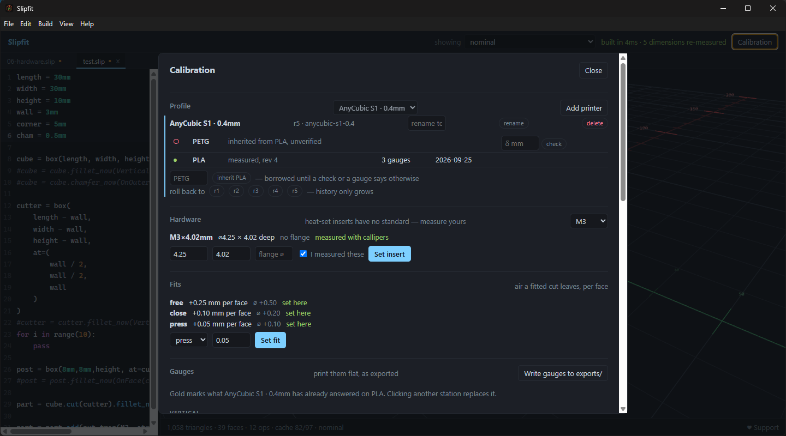
The mark at the start of each row is the whole story:
Mark Row reads Means ● measured Its own gauges, printed in this material. ◐ inherited from PLA + check δ +0.04mm Another material's gauges plus one correction you printed for. ○ inherited, unverified Another material's gauges, untouched. An inherited number never gets presented as a measured one, not in this table, not in the export report. Inheritance is also one hop only: a material that inherits from a material that itself inherits gets refused, because two stacked approximations were each only ever justified on their own, not stacked on top of each other.
-
Undoing a reading
The bottom row of the Profile panel is a line of chips,
r1r2r3…, one per revision, most recent last. Click one, and the profile goes right back to whatever it held then.A roll-back is a new revision holding the old contents rather than a deletion, so history only ever grows, and you can always roll forward again later. No model gets touched by any of this, the next build simply asks a profile that now answers differently.
There's nothing wrong with a model whose gauges haven't been printed yet. With no profile
selected, you're simply editing, and nominal is the right answer with no warning attached.
With a profile selected but no gauge for a particular fit, you get the nominal number plus a
warning naming exactly which gauge to print. And with only the vertical strips answered, a
sideways feature borrows the vertical reading, which is better than nominal, and the report
says held from vertical beside it so you know.
Seeing that it worked
The last section of the sheet, Compensation in this build, lists what the model you currently have open actually got, every dimension the profile moved, and where that number came from. It's the same information the export report carries, just available before you commit to writing a file.
Parts that fit
Export and print
Where intent finally turns into actual millimeters. File ▸ Export, or Ctrl/Cmd + E.
Picking a format
Pick a format, choose where the file goes, and Slipfit shows you exactly what it wrote:
| Format | Carries | Reach for it when |
|---|---|---|
| 3MF — project Ctrl/Cmd + E |
Geometry, plus the print settings your features asked for — solid infill under an insert, five perimeters round a nut trap, a support blocker in a bridged hole. | Always, unless your slicer refuses it. This is the one the whole export is designed around. |
| 3MF — plain | Geometry only, in the same container. | Your slicer loaded the project file as three separate objects instead of one. See the warning below. |
| STL — binary | Geometry only, in a format with nowhere to put anything else. | Something downstream only speaks STL. |
| STEP | The B-rep itself — no mesh at all — as designed, uncompensated. More, below. | Sending the design to a machinist, to Fusion or FreeCAD, or to anyone who is not this printer. |
3MF and STL both come out the right size for your printer. The fit corrections get baked right into the mesh by re-running your model with the profile bound, before anything's even turned into triangles, so choosing plain or STL only costs you two print settings you could set by hand anyway, and none of the actual calibration.
STEP is the one exception, and it's on purpose. It carries no mesh to compensate and no printer to compensate for, it always gets written nominal, no matter what showing is set to, because a 3.2mm hole baked in for one printer is simply wrong, by a documented amount, for everyone else who opens the file.
It exports what you're actually looking at
Two things decide what lands in the file, and both are already right there on screen. The
text in the editor is what gets exported, not the last successful build, so
whatever you can see is exactly what gets written. And the showing control
decides the numbers: export with it on nominal, and you get the millimeters you
typed; export with a printer selected, and you get that printer's numbers instead, for 3MF and
STL. A STEP ignores showing entirely; more on that
below.
An export made while showing says nominal gives you an
uncompensated part. It's still a perfectly good file, it's simply the one you'd have gotten
from any other CAD program. The report says profile nominal right at the top and
tells you plainly that nothing was applied.
The report
A report opens over the viewport every time you export, and it's genuinely worth reading rather than dismissing on reflex. It's the only place that tells you the file is not the millimeters you typed, where each changed number came from, and exactly what your slicer's being told:
That one's a clean report: everything it needed had already been gauged, so there's nothing under Worth knowing. When there is something there, it reads like this, plain sentences, each one naming what it couldn't answer confidently and what it did instead:
⚠ nothing in Kobra S1 · 0.4mm has gauged bolt_clearance.close
— print that gauge, or accept M3 clear at nominal.
⚠ PETG is inherited from PLA, unverified — this number was
measured in PLA.measured, rev 7, or inherited from PLA. An inherited number is never shown
as a measured one.
print settingsthe extra instructions riding along in the file, and which feature asked for
each.
checksadvisory. A part too big for the bed is reported and still written.
warningsanything the profile could not answer confidently, a fit with no gauge, a sideways
feature borrowing the vertical reading, a borrowed material.
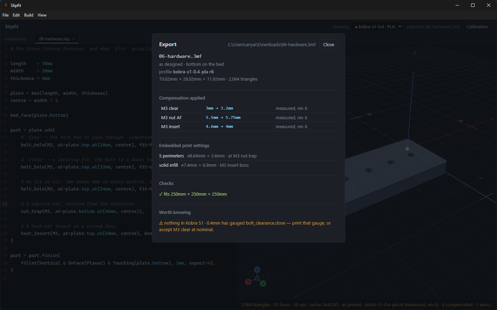
Every line in that report gets assembled from what the export actually did, not worked out again afterward.
Those compensation lines are the gauges doing their job: the file says M3, the
export says 3.2mm, and the difference between them came off a print you actually
held in your hand.
Exporting re-runs your file with the profile bound, rather than just stretching the finished shape afterward. That's exactly why a nut trap can pick up a lead-in chamfer that exists only because your printer sags on bridges, nothing that just worked on the mesh could ever add one.
Two ways to lay several bodies out
Every export now carries a layout line beside the profile, because several bodies can go onto a plate in two different ways, and they aren't interchangeable outcomes:
| Layout | Writes | Reach for it when |
|---|---|---|
| arranged for printing | Each body turned onto its own bed_face(), spaced apart on a grid with
12mm of clear air between bodies. |
Always, for 3MF and STL — it is the default, because those two go to a slicer. |
| assembled — every body where the model put it | Exactly the coordinates your file built, bodies overlapping if that is what you wrote. | Checking the assembly itself, a print-in-place mechanism, and every STEP — a design file has no bed to lay a plate on. |
A body moves as little as either mode allows. One already lying on its bed
face gets written exactly where you put it, so a model with a single body and one
.bottom declared, every example on this page up to now, exports byte-identical
to what it always did. A body only moves when there's an actual reason to: turning one onto its
bed face can drop it below the plate, so it gets set back down; and bodies have to be spaced
apart or they'd print right inside each other. There's no packing algorithm here, the grid is
equal cells, not the tightest possible fit, because your slicer's own auto-arrange already does
that job and knows about your plate's exclusion zones, which Slipfit simply doesn't.
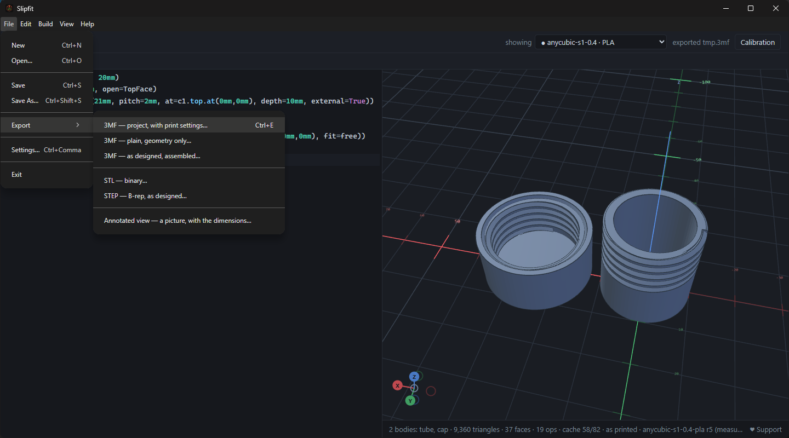
Each body's own build direction, its own bed_face(), is what
arranged turns it onto. Declaring one on more than one body is fine; declaring
two on the same body, or none at all for a body you exported, gets refused rather than
guessed at, since a body only ever prints one way up:
SlipError: lid has two bed faces: top and bottom
= a body prints one way up. Remove one of the two bed_face()
calls — lid.slip:2 and lid.slip:3Design-for-print checks
Three checks run automatically on every export, against the compensated solid at each body's own build direction, so a lid printed face-down and a base printed on its side each get checked against the direction they actually print in, not against however the file happens to have them oriented. Every threshold comes straight off the profile rather than being invented here on the spot:
| Check | Flags | Threshold, and where it comes from |
|---|---|---|
| overhang | A downward surface leaning past the angle the next layer can be printed onto. | atan(½ × extrusion width ÷ layer height) — derived, not guessed. On a
0.4mm nozzle at your calibrated layer band this comes out to exactly 45°, the number every
FDM user already carries. |
| bridge | A flat ceiling spanning further unsupported than your printer's fan and cooling can hold. | A field on the profile with a shipped default — bridging cannot be derived from the nozzle the way the other two can. |
| wall | Material between two faces that face each other — the wall of a nut trap, the gap across a slot — thinner than two perimeters. | 2 × extrusion width. |
All three are advisory, never blocking, a finding is a row sitting beside a
file that got written anyway, not a refusal to write it at all. Your own .slip can
add a fourth kind of row, using the same dimensioned language as everything else here:
assert length - insert >= 8mm
An assert still raises an error and stops the build if it fails, that hasn't
changed, and it won't, because turning off the one keyword whose entire meaning is stop
would be exactly the confident-but-wrong outcome this page keeps warning you about. What's new
is that it gets captured on the report either way, marked clearly as yours:
✓ overhang 44.3deg ≤ 45deg lead-in chamfer 0.4mm bracket.slip:30
✓ bridge nothing past 30mm
✗ wall 0.4mm < 0.8mm tray floor to DIN 934 M3 pocket showcase.slip:91
✓ fits 220mm × 220mm × 250mm (arranged)
✓ assert length - insert >= 8mm (yours)Thin-wall checking is opposing faces only, two surfaces facing each other
across material, like the wall of a nut trap or the gap across a hole. A tapering or curved
thin region between faces that never actually face each other isn't caught, and a clean row
says exactly that: nothing under 0.8mm, not a claimed minimum. The overhang angle
gets sampled once per face at its center, so a fillet blending a wall into a ceiling, which
passes through 90° by its very construction, doesn't get flagged the way a flat ceiling of
the same size would be.
What rides along in the 3MF
Features declare print settings your slicer would otherwise have to guess at:
| Setting | Asked for by | Because |
|---|---|---|
| Solid infill | heat_insert |
The insert spins out under torque otherwise. |
| 5 perimeters | nut_trap |
The trap wall is the part that fails. |
| Support blocker | bolt_hole, when bridged |
The sag is expected; support inside a bore has to be drilled out. |
Open the 3MF and confirm that the part loads as one object with extra volumes, not as three separate parts, and that the nut trap area shows 5 perimeters and the insert boss shows solid infill in the preview.
If the extras arrive as loose objects instead, your slicer is misreading them, and every pocket they cover will end up filled in solid. The symptom reads as "the features never got exported", they did; they just got plugged back up. Use 3MF, plain, which writes no extra volumes at all. The compensated geometry is baked into the mesh either way, so you lose nothing on size.
STL
Offered, with the loss stated plainly: an STL has nowhere to put print settings or metadata. The compensation is not lost, though, that lives right in the geometry, so an STL out of Slipfit is still the correct size for your printer. The report tells you exactly how many settings got discarded along the way.
Every mesh Slipfit writes, STL or either flavor of 3MF, is built at 0.02mm accuracy, five times finer than the smallest correction the gauges can even resolve. A coarser mesh would actually undo the compensation: at 0.1mm, a ⌀3.20 hole comes out as a polygon whose inside measurement reads ⌀3.0, wiping out exactly the correction the gauge was printed to give you.
STEP, the one export that isn't a mesh
Every other format heads to a slicer, so every other format gets written as
printed, re-evaluated with the printer bound, holes grown by whatever that machine
shrinks them by. A STEP goes somewhere else entirely: to a machinist, into Fusion or FreeCAD, to
somebody checking the design who doesn't even have Slipfit. Compensation is one printer's error
in one material, and baking a 3.2mm hole into an interchange file would hand everyone who isn't
that specific printer a part that's wrong by a documented amount. So export_step
applies none of it, and says so right on the report rather than dropping the profile silently:
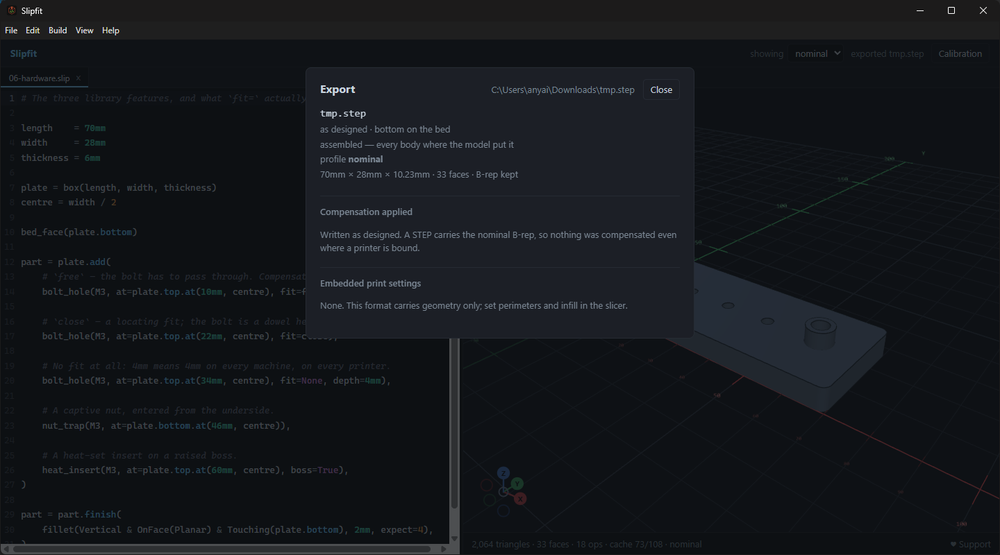
That flag is deliberate rather than an oversight: nothing was compensated and nothing could be compensated here are two different sentences, and a report that printed the first while a printer was plainly bound in the window would just be the report contradicting what you're looking at.
The report also counts faces rather than triangles, because faces are exactly
what this format was chosen to preserve, the whole B-rep survives the round trip, not a
tessellation of it. Each body gets written with a name in the file's own PRODUCT
record, which is what lets use_step(path, "lid") pick a body
back out of a file Slipfit itself wrote. Units are always explicit millimeters, whatever unit a
reader might otherwise have assumed.
Annotated view, a picture, not a mesh
File ▸ Export ▸ Annotated view (PNG)… sits behind a separator from the geometry formats above it, because it isn't one of them. Every export above writes the B-rep your file built, compensated or not, as designed or as printed. This one writes a photograph of the canvas instead: whatever's on screen right now, including any pins you placed with Measure, at exactly the size the viewport happens to be.
That's the whole difference from everything above it, and the entire point of having it: run it again a minute later, after dragging a pin or turning the model, and you get a genuinely different file. Nothing gets rebuilt to make it, the selected pin and whatever face the cursor is hovering over are cleared first, so neither one lands in the picture, and then whatever's on screen at that point is what gets saved.
Export › Annotated view (PNG)
✓ wrote bracket-view.png 1400 × 900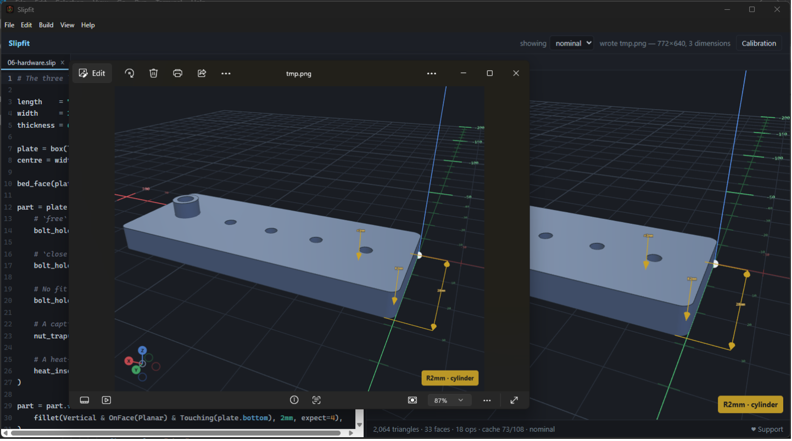
This is the file that answers "will this fit" for somebody who isn't going to print it and doesn't have Slipfit, a client signing off a bracket, a shop quoting a job. Nothing here is compensated for a printer; it's exactly what Measure had on screen, nominal or as-printed depending on what showing happened to be set to.
Reading your model
The inspector
Click a face and find out why it's there, not merely what happened to touch it last.
▸ chamfer(0.6mm) bracket.slip:46 created
fillet(2mm) bracket.slip:45 applied to
heat-set insert M3 bracket.slip:39 applied to
box(60, 30, 6mm) bracket.slip:23 applied toEvery entry says exactly how it relates to the face, so nothing gets implied that isn't actually true:
| Relation | Means |
|---|---|
created |
This step made the surface — a shape's own face, or a fillet. |
modified |
It changed from a face that was already there. |
applied to |
What the step above it was applied to. |
recovered |
Worked out through a fallback. A clean chain never shows this. |
Hardware features collapse down to what their author actually declared, rather than dumping you five layers of library code, and the bit that made the face you clicked gets marked, so the block directly answers which part of the nut trap this flat actually is:
▸ nut trap M3 bracket.slip:36
▸ bolt clearance ⌀3mm
hex pocket AF 5.5mm
lead-in chamfer 0.4mm
depth 2.6mm (nut 2.4mm +0.2mm)A face with two equally valid creators, where combining two shapes merged two flat surfaces into one, ends the chain by showing both, ordered by line number, rather than arbitrarily picking just one of two equally true answers.
Clicking works both ways
| Do this | See that |
|---|---|
| Click a face | The lines that produced it light up in the editor. |
| Move the cursor onto a line | Every face that line produced lights up in the viewport. |
| ↑ ↓ | Step through the chain; each entry lights its own lines and faces. |
Three colors, three claims: selected (the face you clicked), lit (what the current line or entry produced), and failing (whatever an operation choked on).
Nominal ↔ as-printed
The showing control in the title bar is the exact same thing as the toggle at the top of this page:
showing [nominal ▾] hole 3.00mm
showing [● kobra-s1-0.4 · PLA ▾] hole 3.20mm as printedIt's a rebuild with a profile bound, not just a re-coloring of what's already on screen. Everything whose inputs didn't move comes back instantly from cache, so flipping to the second version is cheap. The footer always tells you which of the two you're actually looking at.
Reading your model
Section view and measuring
Two ways of looking, for the question a shelled part always raises: what does the inside actually look like, how big is it really, and how do you put those numbers in front of somebody who doesn't have Slipfit?
Section, S
Cuts a clipping plane straight through the part so you can see inside it, without changing the model or rebuilding a thing. It's just a way of looking, in the same family as X-ray and the anchor toggle, not in the file, not part of the build, and free to drag around.
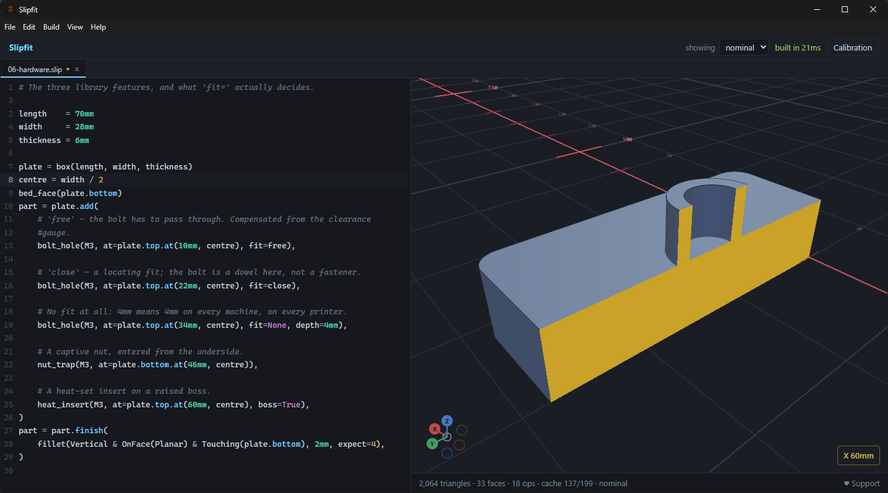
The cut face is capped, and that's exactly what makes it worth having: a clipped solid with no cap would just be a shell with a hole in it, and you'd be staring through into the inside of the far wall instead of seeing the material the plane actually just passed through.
| Control | Does |
|---|---|
| S, or View ▸ Section | Toggle the plane on and off. |
| View ▸ Section axis — X / Y / Z | Which way the plane faces. |
| Flip which half is kept | Swap which side of the plane you are looking at. |
The plane only ever cuts your part, the bed, the grid, the anchors, and the ghost of an unconsumed result all get left alone, so a section always reads as a section rather than as something gone wrong with the renderer.
Measure, M
Pick faces and get exact numbers pinned right onto the part, taken off the real surfaces rather than the mesh drawn on screen, a ⌀8 bore reads 8.000mm, not the 7.98 a triangle mesh at viewport resolution would give you.
M, or View ▸ Measure, turns the mode on rather than taking one single measurement, it carries a checkmark, same as X-ray and Section do, and stays on until you switch it off again. A part worth explaining to somebody else usually needs six or eight numbers on it at once, not just one, so placing a pin re-arms the mode instead of ending it.
| You do | You get |
|---|---|
| Pick two faces | A pin on the distance between the nearest points, with a line drawn over the part connecting them, so a surprising number has a witness rather than nothing to check it against. |
| Pick two planar faces | The angle too — parallel is what two faces of a wall report, which reads
the distance as a thickness rather than an arbitrary gap. |
| Pick one face, then Enter | A single pin on its own size — ⌀ on a bore, R on a fillet. A flat face has neither and refuses rather than pinning a zero. |
M measure mode on — checkmark on the View menu
click the bore's wall
Enter ⌀6mm pinned
click the plate's top
click the plate's bottom
8mm pinned, parallel — still in measure modeA face can point back at its own axis two ways, and where that's genuinely unclear the pin reads ⌀ rather than R. A fillet mislabeled ⌀ is just a misprint a shop will catch by eye; a bore mislabeled R is a part machined to half the size it actually needs, the two mistakes aren't equally bad, so the tie-break favors the one that's merely embarrassing.
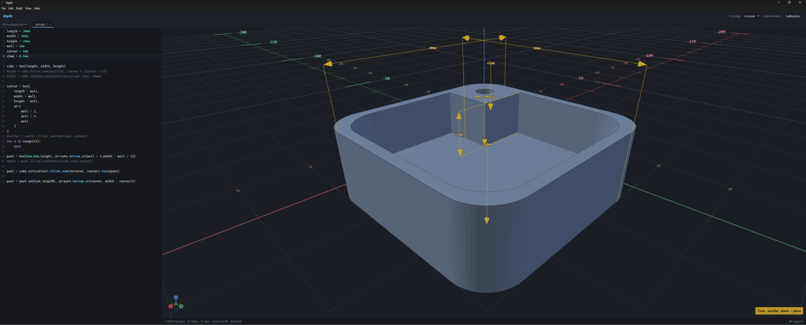
Moving a pin, and losing one on purpose
Click a pin to select it. ↑ ↓ ← → nudge it, dragging moves it by hand, and Delete removes it. Esc drops the selection before it does anything else.
A label only slides square to what it measures, further out, or sideways along the part, never at some stray in-between angle where it would stop reading as a clean dimension line. That's a smaller freedom than a totally free drag, and it's on purpose: a number standing off at 37° reads as a mistake, not as a considered placement choice.
Every pin gets re-checked against the model on every rebuild, not merely redrawn. Edit the hole a pin sits on, and its number moves right along with it; delete the feature it was measuring, and the pin disappears rather than pointing at nothing, with the status line saying exactly how many got dropped. A pin is never restored across a rebuild, it's re-resolved, so what's on screen is either correct or gone, never a leftover guess.
Pick a named frame instead of a face, and it measures as a vertex at its origin, an anchor is a declared point rather than geometry, and "how far is this surface from that frame" is the honest reading of the question a pick on one actually raises.
There's no sheet, no paper size, no title block, and no second view, one viewport with pins
on it, exported as one picture. Pins live for the session only, same as X-ray and Section:
closing the file drops them, and none of it ever gets written into the .slip.
When a dimensioned view needs to leave the window, export it as a
picture.
Going further
Eight worked examples
From two lines to a vented enclosure lid. Every one of these was actually built before it was written down, the figures underneath each one are exactly what it produces.
All eight live in the repository under examples/tour/, so you can open them up
instead of retyping them from scratch.
A plate with a hole
Set part, build a shape, take something away from it.
# A rectangular plate with one hole through it.
part = box(40mm, 20mm, 3mm).cut(
hole(5mm, 3mm, at=(20mm, 10mm, 3mm))
)A parametric spacer
Named numbers, a bit of arithmetic between them, and an anchor used as a position.
# A parametric spacer. Change one number, the rest follows.
bore = 5mm
wall = 2mm
height = 12mm
outer = bore + wall * 2
blank = cylinder(outer, height)
part = blank.cut(hole(bore, height, at=blank.top))Placing by anchor
Positions measured across a face, plus a named anchor of your own making.
# Placing holes by anchor rather than by coordinate.
length = 60mm
width = 30mm
thickness = 6mm
plate = box(length, width, thickness)
part = plate
part = part.cut(hole(4mm, thickness, at=plate.top.at(10mm, width / 2)))
part = part.cut(hole(4mm, thickness, at=plate.top.at(50mm, width / 2)))
# A named anchor, so a later feature has somewhere to refer to.
part = part.with_anchor("center", plate.top.at(length / 2, width / 2))
part = part.cut(hole(8mm, 3mm, at=part.center))Rounding the right edges
Why OnFace(Planar) is in there, and why the chamfer down the line expects
eight.
# Selection and the finishing pass.
plate = box(50mm, 25mm, 5mm)
part = plate.cut(hole(6mm, 5mm, at=plate.top.at(25mm, 12.5mm)))
# `OnFace(Planar)` keeps the bore's vertical seam edge out of the selection.
# Without it this matches 5 edges, not 4 — and `expect=` says so.
part = part.finish(
fillet(Vertical & OnFace(Planar) & Touching(plate.bottom), 3mm, expect=4),
# The fillet above ran first, so the rim is now 4 straights + 4 arcs.
chamfer(TopRim, 0.8mm, expect=8),
)A vented plate
A recipe that hands back a list of positions, and two nested loops placing 18 holes for you.
# Loops and functions: a vented plate whose hole field re-centers itself.
width = 70mm
depth = 45mm
thickness = 3mm
margin = 8mm
vent = 5mm
pitch = 10mm
def spread(span, margin, pitch):
"""Offsets across `span`, inset by `margin`, centered on what is left over."""
usable = span - margin * 2
count = int(usable / pitch) + 1 # Length / Length is a float
start = margin + (usable - pitch * (count - 1)) / 2
return [start + pitch * i for i in range(count)]
plate = box(width, depth, thickness)
bed_face(plate.bottom)
part = plate
for u in spread(width, margin, pitch):
for v in spread(depth, margin, pitch):
part = part.cut(hole(vent, thickness, at=plate.top.at(u, v)))
part = part.finish(chamfer(TopRim, 0.6mm, expect=4))for u in spread(…) just means "do the indented lines once for each number
in that list, calling it u each time." One loop nested inside another
visits every combination, 6 across times 3 down comes out to 18 holes, from just four lines
of code. Make the plate bigger and the count changes on its own, since spread()
works it out fresh rather than being told a fixed number. That's the exact moment code stops
being the harder option and starts being the easier one.
All three features, and what fit= decides
The same plate, five different declarations of exactly what goes in each hole.
# The three library features, and what `fit=` actually decides.
length = 70mm
width = 28mm
thickness = 6mm
plate = box(length, width, thickness)
center = width / 2
bed_face(plate.bottom)
part = plate.add(
# `free` — the bolt has to pass through. Compensated from the clearance gauge.
bolt_hole(M3, at=plate.top.at(10mm, center), fit=free),
# `close` — a locating fit; the bolt is a dowel here, not a fastener.
bolt_hole(M3, at=plate.top.at(22mm, center), fit=close),
# No fit at all: 4mm means 4mm on every machine, on every printer.
bolt_hole(M3, at=plate.top.at(34mm, center), fit=None, depth=4mm),
# A captive nut, entered from the underside.
nut_trap(M3, at=plate.bottom.at(46mm, center)),
# A heat-set insert on a raised boss.
heat_insert(M3, at=plate.top.at(60mm, center), boss=True),
)
part = part.finish(
fillet(Vertical & OnFace(Planar) & Touching(plate.bottom), 2mm, expect=4),
)
Only the free fit has a gauge in the shipped set. Select a printer, and the
close hole comes out nominal with a warning naming the gauge you'd need to print,
which is the honest answer here, not an error.
A vented enclosure lid
A recipe, a bit of trigonometry, a honeycomb fused into one cutter, four heat inserts, and a description that has to work around 184 candidate edges.
# A vented enclosure lid: functions, trigonometry, a honeycomb, hardware.
#
# Everything below is derived from the eight numbers at the top. Change
# `inner_x` and the lip, the vent field and the four bosses all follow.
# ----------------------------------------------------------------- the box
inner_x = 84mm
inner_y = 58mm
wall = 2.4mm
deck = 3mm
# ------------------------------------------------------------------ the lip
lip_h = 5mm
lip_t = 1.6mm
lip_gap = 0.2mm # clearance so the lid actually drops in
# ---------------------------------------------------------------- the vents
vent_af = 5mm # hexagon, across the flats
vent_web = 1.8mm # plastic left between neighbors
field_x = 40mm
field_y = 26mm
outer_x = inner_x + wall * 2
outer_y = inner_y + wall * 2
def honeycomb(width, height, across_flats, web):
"""Centers of a hex field that fits inside `width` x `height`.
Rows are spaced by √3/2 of the pitch and every other one is shifted half a
pitch across — which is what makes the cells nest instead of stack.
"""
pitch = across_flats + web
row = pitch * (sqrt(3) / 2)
cells = []
for j in range(int(height / row) + 1):
shift = pitch / 2 if j % 2 else 0mm
for i in range(int(width / pitch) + 1):
u = pitch * i + shift
v = row * j
if u <= width and v <= height:
cells.append((u, v))
return cells
deck_plate = box(outer_x, outer_y, deck, label="lid deck")
bed_face(deck_plate.bottom)
part = deck_plate
# ---- the lip, as a rectangular ring standing on the deck -----------------
skirt = box(
inner_x - lip_gap * 2, inner_y - lip_gap * 2, lip_h,
at=(wall + lip_gap, wall + lip_gap, deck),
)
bore = box(
inner_x - lip_gap * 2 - lip_t * 2, inner_y - lip_gap * 2 - lip_t * 2, lip_h,
at=(wall + lip_gap + lip_t, wall + lip_gap + lip_t, deck),
)
part = part.fuse(skirt.cut(bore))
# ---- the honeycomb, cut as one tool rather than forty --------------------
# Fusing the cutters first turns forty booleans against the part into one.
cells = honeycomb(field_x, field_y, vent_af, vent_web)
u0 = (outer_x - field_x) / 2
v0 = (outer_y - field_y) / 2
cutter = None
for u, v in cells:
cell = hex_prism(
vent_af, deck,
at=deck_plate.top.at(u0 + u, v0 + v),
axis=(0, 0, -1), # aimed down, into the deck
)
cutter = cell if cutter is None else cutter.fuse(cell)
part = part.cut(cutter)
# ---- four bosses with heat-set inserts -----------------------------------
inset = 7mm
part = part.add(*[
heat_insert(M3, at=deck_plate.top.at(u, v), boss=True)
for u in (inset, outer_x - inset)
for v in (inset, outer_y - inset)
])
# ---- finishing, over the completed solid ---------------------------------
# `Touching(bottom)` alone would match 184 edges here — every honeycomb cell
# has six vertical edges reaching the underside. The two outer side planes
# name the four corners and nothing else.
outer_corners = Vertical & (OnFace(deck_plate.left) | OnFace(deck_plate.right))
part = part.finish(
fillet(outer_corners, 3mm, expect=4),
chamfer(BottomRim, 0.6mm),
)The description at the bottom. On a plain plate, "the four corner edges" is
Vertical & Touching(bottom). Once there's a honeycomb in the part, that same
phrase matches 184 edges, because every single hexagon has six vertical edges reaching the
underside. Naming the two outer side planes instead stays precise no matter what else the
part grows into, and expect=4 is exactly what would've told you the first
version was wrong.
A part built from another file
A library with no part of its own, included and placed four separate times.
# parts/standoff.slip — a library, not a part.
edge_margin = 6mm
def standoff(height=10mm, outer=9mm, bore=3.2mm):
pillar = cylinder(outer, height)
drilled = pillar.cut(hole(bore, height, at=pillar.top.at(0mm, 0mm)))
return drilled.with_anchor("seat", pillar.bottom)
# 08-composed.slip — the model that uses it.
plate_x = 70mm
plate_y = 50mm
thickness = 5mm
height = 12mm
parts = use("./parts/standoff.slip")
plate = box(plate_x, plate_y, thickness)
bed_face(plate.bottom)
# The four corners, inset by the margin the library recommends.
inset = parts.edge_margin
corners = [
(inset, inset),
(plate_x - inset, inset),
(inset, plate_y - inset),
(plate_x - inset, plate_y - inset),
]
part = plate
for x, y in corners:
pillar = parts.standoff(height=height).placed(
"seat", onto=plate.top.at(x, y)
)
part = part.fuse(pillar)
part = part.finish(
chamfer(BottomRim, 0.6mm),
)That the standoff isn't in this file at all. Correct its bore once, and every model that
includes it gets corrected right along with it, which is the whole difference between a
library and four copies you'll end up editing three of. The seat anchor is what
makes it placeable: mating it onto plate.top.at(x, y) stands the pillar right on
the plate without anyone having to work out a height by hand.
Going further
When it goes wrong
Real messages, with the actual fix attached. Slipfit points at the text you wrote, not at the code underneath it that you'll never see.
Errors show up twice on purpose, underlined right in the editor, and spelled out in full in a panel beneath it. The underline disappears the instant you type your next keystroke, because an error belongs to the exact text that caused it, and nothing else.
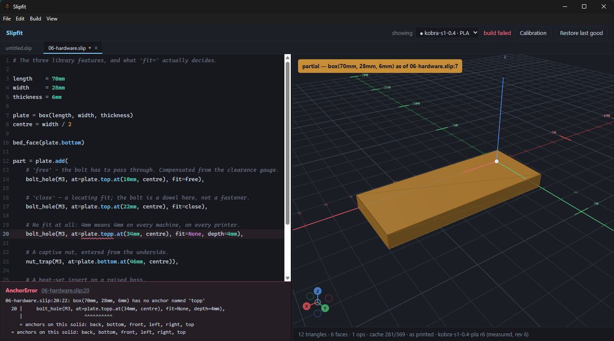
Units and arithmetic
model.slip:1:8: expected Length, got Scalar for box() z
1 | part = box(40mm, 20mm, 3)
| ^^^^^^^^^^^^^^^^^^
= did you mean 3mm?model.slip:1:5: cannot add Length and Scalar
1 | w = 10mm + 5
| ^^^^^^^^model.slip:1:12: a unit suffix must be attached to its number, not '40' 'mm'
1 | part = box(40 mm, 20mm, 3mm)
| ^^^^^
= write 40mmmodel.slip:1:12: cannot subtract Length from Scalar
1 | part = box(3-1/2in, 20mm, 3mm)
| ^^^^^^^
= mixed numbers are not supported — they collide with subtraction; write 3.5in or 7/2inmodel.slip:1:8: expected Angle, got Scalar for hex_prism() rotation
1 | part = hex_prism(5.5mm, 3mm, rotation=30)
| ^^^^^^^^^^^^^^^^^^^^^^^^^^^^^^^^^^
= did you mean 30deg?Anchors and selection
model.slip:2:30: box(40mm, 20mm, 3mm) has no anchor named 'topp'
2 | part = p.cut(hole(3mm,3mm,at=p.topp.at(5mm,5mm)))
| ^^^^^^
= anchors on this solid: back, bottom, front, left, right, topmodel.slip:2:24: Vertical & Planar can never match anything
2 | part = p.finish(fillet(Vertical & Planar, 1mm))
| ^^^^^^^^^^^^^^^^^
= Vertical applies to edge, Planar to facemodel.slip:2:8: expected 3 edges, matched 4
2 | part = p.finish(fillet(Vertical, 1mm, expect=3))
| ^^^^^^^^^^^^^^^^^^^^^^^^^^^^^^^^^^^^^^^^^
= selector was VerticalFits and features
model.slip:2:8: M3 clearance hole at top(80.00, 10.00, 3.00) removed no material
2 | part = p.add(bolt_hole(M3, at=p.top.at(80mm, 10mm), fit=free))
| ^^^^^^^^^^^^^^^^^^^^^^^^^^^^^^^^^^^^^^^^^^^^^^^^^^^^^^^
= the position is off the part, or the feature sits entirely outside it — check the anchor and the offsetspress fit collapsed rib at -0.05mm
= the offset left nothing behind, so rib has a feature thinner
than 0.1mm; reduce the press fit gap in Config > Hardware > Fitsno such fit 'snug'; use free, close, press or noneSymptoms with no error message
| What you see | What it usually is |
|---|---|
| Nothing appears in the viewport, and no error | The file never set part. That's the one name Slipfit actually looks for. |
A ghosted shape and an amber 1 unused result badge |
A line that built something and then threw it away — you wrote part.cut(…)
where you meant part = part.cut(…).
|
| A cut removed nothing | You reached for cylinder() where you wanted hole(). A
cylinder built on a top face grows upward, into thin air. |
| A hole came out in mid-air off the side of the part | A side-face anchor. left, right, front, and
back measure their second number across the part's thickness.
|
| Two of your own parts won't go together | The pocket is exactly the size of the thing going into it. Give the
cut a fit=. |
| The part is amber and hatched | The build failed partway, and you're looking at an intermediate stage. Read the badge; don't export it. |
The export report says profile nominal |
The showing control was set to nominal. Select your
printer and export again — nothing got compensated this time. |
Export says not exported — this file is not trusted |
Exporting runs the model, so it's gated exactly the way building is. Trust the file first. |
Export fails with has no entry for <material> |
That profile has no gauges recorded for that material yet. Record a reading, inherit
another material, or just export on nominal. |
| The exported part loads as three separate objects | Your slicer isn't reading the project 3MF correctly. Use 3MF — plain instead; the geometry's identical and still fully compensated. |
| The window is stuck building | Ctrl/Cmd + . cancels it. An endless loop in a model can't be interrupted from inside itself, which is exactly why models run in a separate process. |
| You've edited your way into a mess | Build ▸ Restore last good build. The last text that built cleanly stays kept on disk, so it survives even closing the app. |
Going further
Reference
Every name a .slip already knows, before you've imported anything at all.
Building shapes
box(x, y, z, *, at=None, label=None)
cylinder(diameter, height, *, at=None, axis=(0,0,1), label=None)
cone(diameter, top_diameter, height, *, at=None, axis=(0,0,1), label=None)
hex_prism(across_flats, height, *, at=None, axis=(0,0,1), rotation=None, label=None)
hole(diameter, depth, *, at=None, axis=None, label=None)
profile(on=anchor_or_position, *, label=None)
text(string, height, *, on, align="left", spacing=0mm, font=None) # a profile source, see LetteringDrawing and sweeping a profile
| Member | Gives |
|---|---|
.line_to(u, v, *, label="") |
A straight run to that point. |
.arc_to(u, v, *, radius, label="") |
The minor arc to that point; the sign of radius is a turn direction. |
.close(*, label="") |
Draws the closing run and returns a finished Profile. |
.extruded(height) |
A solid, pushed along the anchor's own normal. |
.revolved(angle=360deg, *, about) |
A solid, turned about an Axis. |
plate.top.u plate.top.v plate.top.axis # the three lines through an anchor's origin
plate.top.at(20mm, 0mm).u_axis # the u line, through a point on it instead
plate.top.at(20mm, 0mm).axis # the normal, through that same pointMirror and patterns
pattern(tool, *, count, spacing, along) # a row of copies, as one tool
polar_pattern(tool, *, count, about) # a ring of copies, dividing a full turn| Member | Gives |
|---|---|
.mirrored(about) |
The reflected copy — about is an anchor or a point on one.
More.
|
Working with a solid
| Member | Gives |
|---|---|
.cut(tool, fit=None) |
A new solid with the tool removed. fit= leaves air on every face — free,
close, press or none.
|
.fuse(tool) .intersect(tool) |
A new solid. All three take simplify=False. |
.add(*features) |
A new solid with hardware features applied in order. |
.finish(*blends) |
A new solid with fillets and chamfers applied in order. |
.shelled(wall, *, open, expect=None) |
A hollow solid to that wall thickness, with the faces open matches left
off. More. |
.fillet_now(pred, r) .chamfer_now(pred, d) |
Round or bevel immediately, for a half-built shape. |
.placed(anchor, onto=, spin=) |
Mate one of its anchors onto a position on another solid. |
.moved(dx, dy, dz) .rotated(angle, about=) |
Move or turn it. Anchors go with it; volume is unchanged. |
.edges(pred, expect=None) .faces(pred, expect=None) |
A selection you can count, index and loop over. |
.with_anchor(name, where) |
A new solid carrying an extra named anchor. |
.anchors .label |
What is on it, and what the inspector calls it. |
.volume .bounds .size() |
Measurements, with units on them. |
Descriptions
# edges Linear Circular Vertical Horizontal
# LongerThan(q) ShorterThan(q) Touching(t) OnOuterWire(t)
# faces Planar Cylindrical Conical SurfaceIs(name)
# FacingUp FacingDown Facing(v) Highest Lowest
# either Anything Radius(q) Diameter(q) AtHeight(q) OnFace(t)
# swept Swept FromSegment(label) # from a profile — see Profiles
# named TopFace BottomFace TopRim BottomRim
# combine a & b a | b ~a (also Not(a))Hardware and printing
bolt_hole(size, *, at, fit=free, depth=None)
nut_trap(size, *, at, clearance=…, lead_in=…, bolt=True, fit=free)
heat_insert(size, *, at, boss=False, wall=1.2mm, clearance=…)
bed_face(anchor) # which face goes on the bed
free close press # the three fits
M2 M2_5 M3 M4 M5 M6 M8 M10 M12 # threads and fastener sizes
DIN_912 ISO_7380 DIN_934 DIN_985 # standardsThreads
thread(diameter_or_size, pitch=None, *, at, depth, fit=free, external=False)
tapping_hole(size, *, at, depth, fit=None)
fit here is design clearance out of Config › Hardware › Fits, the
same three words as a fitted cut() uses, never a printer reading.
Using another file
use(path) # run another .slip, get its names back
# relative to the file that wrote the call
use_step(path, name=None) # read a STEP file, get an ordinary Solid
# name= picks a body when the file holds severalMaths that knows about units
sin(angle) cos(angle) tan(angle) # take an Angle, give a number
asin(x) acos(x) atan(x) # take a number, give an Angle
atan2(y, x) # two of the same kind, gives an Angle
sqrt(area) # Area -> Length, Scalar -> Scalar
pi tau
Quantity(value, "mm") # what a unit literal becomesPython's own built-ins are all still there, and nothing's been removed. import
works for anything else in the standard library too.
The deeper reference
This page is the way in. When you want the exact detail, each layer has its own document sitting in the repository:
| Document | Covers |
|---|---|
docs/language.md |
Units, the dimension system, precision, the full error catalog. |
docs/modelling.md |
Shapes, anchors, descriptions, booleans, fitted cuts, the finishing pass, several bodies, clearance and overlap. |
docs/composition.md |
use(), path rules, placement, trust across files. |
docs/printing.md |
Hardware tables, profiles, gauges at two attitudes, compensation, the two export layouts, the design-for-print checks, the 3MF dialect. |
docs/calibration.md |
The gauge loop step by step, with print settings. |
docs/shell.md |
The window, trust, rebuilds, tabs, the editor, the viewport, section, measuring and themes. |
docs/inspector.md |
The ancestry chain, the highlight bus, the calibration panel. |
docs/worker.md |
The build process, crash recovery and partial results. |
docs/packaging.md |
How the installers are built, and where a packaged install keeps things. |